02 The cathode ray tube
1858 to 1930: the discharge tube, Thomson’s tube, Braun’s tube, the Coolidge tube and the hot-cathode oscillograph. The wall: a beam that nobody could make on purpose, measure, or trust from one minute to the next.
Pre-requisites for this chapter.
From Part 0 and chapter 1, read first:
- F1 Calculus: derivatives and their rules (sections 1 and 2), small changes (section 5), integrals and substitution (section 7), Taylor series (section 8), partial derivatives (section 9) and first differential equations (section 10).
- F2 Vectors: the cross product (section 3), motion on a circle (section 4), integrals over areas (section 8), flux (section 9), curl and Stokes’s theorem (section 11), the Laplacian (section 12) and polar and cylindrical coordinates (section 13).
- F3 Newtonian mechanics: work and kinetic energy (section 4), energy conservation (section 5), angular momentum (section 7), simple harmonic motion (section 9) and the action (section 12).
- F4 Electricity and magnetism: Coulomb’s law (section 2), Gauss’s law (section 4), potential and the electron-volt (section 5), capacitance (section 6), current density (section 8), the magnetic force (section 10), Biot–Savart (section 11), Ampère’s law (section 12) and the older units (section 19).
- F6 Heat, gases and probability: mean and standard deviation (section 3), the Gaussian (section 5), measurement errors (section 8), the ideal gas (section 10), \(k_BT\) in electron-volts (section 12), the Boltzmann factor (section 13) and the mean free path (section 14).
- F7 Atoms, nuclei and quanta: the electron and its \(e/m\) (section 2), the electron-volt and momenta in eV\(/c\) (section 3), matter waves (section 8) and spin and Pauli’s exclusion principle (section 9).
- Chapter 1: \(\gamma\) and \(\beta\) (section 2.1), rest energies (section 2.3), the Lorentz force (section 3) and rigidity (section 4.1).
Taught in this chapter, just before they are needed:
- Gauss’s law and potentials of simple shapes, continued: the uniform field between parallel plates and its fringing at the edges, for electric deflection (section 2); it builds on chapter 1.
- Errors and their propagation, continued: relative errors through products and powers, systematic against random error, and sensitivity as a logarithmic derivative, for Thomson’s \(m/e\) (section 4) and the hot cathode (section 6).
- Special functions and integrals: the Gaussian integral and its relatives, for counting emitted electrons (section 6) and the coil lens (section 9).
- Maxwell-Boltzmann distribution: the Boltzmann factor, the Maxwellian, and \(k_BT\) at 2500 K, for thermionic emission (section 6).
- Electrons in metals, Fermi-Dirac statistics, work function: states, occupation, the work function and current as a flux, for Richardson’s law (section 6).
- Laplace and Poisson equations: the potential in a gap with and without charge, for the Child–Langmuir law (section 7).
- Ordinary differential equations: first integrals, separation of variables, and the thin-lens limit, for sections 7 and 9.
- Biot-Savart and Ampere’s law: the field on the axis of a coil and its integral, for the magnetic lens (section 9).
- Lagrangian and Hamiltonian mechanics, continued: the vector potential, canonical momentum and a cyclic coordinate, for Busch’s theorem (section 9).
- Energy loss in matter, continued: how far a slow electron goes in a solid, for the screen’s dead voltage (section 10).
- Mean free path and collision rates: how many electrons cross the tube without hitting a molecule, for the vacuum (section 11).
In one page
The wall. For forty years after 1858, a glass tube with two electrodes and a little gas gave a glow, a green patch on the glass, and shadows. Nobody knew what the rays were. Their current and energy depended on the gas left in the tube, which changed as the discharge ran. The decisive test, bending them with an electric field, failed in 1883 because the leftover gas conducted.
The idea. Separate the jobs. A good vacuum lets an electric field act; a hot wire supplies electrons without gas; a fixed potential sets their energy; plates and coils steer them; a phosphor shows where they land. In 1897 Thomson’s crossed fields showed the rays were particles with a charge-to-mass ratio about a thousand times that of the hydrogen ion, and Braun made them draw on a screen. By the 1920s the hot cathode and the high vacuum had made the tube an instrument.
Equations to remember.
- Speed after a potential \(V\): \(\frac{1}{2}m v^2 = qV\), or relativistically \(\gamma = 1 + qV/(mc^2)\).
- Electrostatic deflection on a screen: \(Y = l\,L_s V_d/(2 d V_a)\) (plate length \(l\), gap \(d\), distance \(L_s\) from plate centre to screen; deflecting voltage \(V_d\), beam voltage \(V_a\)).
- Magnetic bending radius: \(r = p/(qB)\); for electrons from 2 kV, \(p = 45.3\) keV/\(c\) and \(B\rho = 1.51 \times 10^{-4}\) T m.
- Thomson’s crossed fields: \(v = \mathcal{E}/B\) and \(q/m = \mathcal{E}\theta/(B^2 l)\).
- Richardson–Dushman: \(J = A_R T^2 \exp(-e\phi_w/k_B T)\), with \(A_R = 4\pi m_e e k_B^2/h^3 = 120.2\) A cm\(^{-2}\) K\(^{-2}\) in theory.
- Child–Langmuir: \(J = \frac{4}{9}\varepsilon_0\sqrt{2e/m_e}\,V^{3/2}/d^2 = 2.334 \times 10^{-6}\,V^{3/2}/d^2\) A/m\(^2\) (V in volts, d in metres).
Numbers worth knowing.
- \(e/m_e = 1.7588 \times 10^{11}\) C/kg. Thomson’s crossed-field values were 2 to 3 times too small; his first method came within about 40 per cent.
- Tungsten at 2500 K gives about 0.28 A/cm\(^2\) (Dushman’s constants: 60.2 A cm\(^{-2}\) K\(^{-2}\), 4.53 eV). Raise the temperature by 1 per cent and the current rises by 26 per cent.
- A 2 kV electron moves at \(0.088c\). In the Earth’s field of about 50 μT its path curves with a 3 m radius, enough to shift the spot 15 mm on a 30 cm tube.
- The gas-kinetic mean free path of an electron in air is about 38 mm at 1 Pa. On that hard-sphere estimate a 30 cm tube needs about 0.1 Pa before half the beam arrives, and about 0.01 Pa before 90 per cent does; the measured cross-section of nitrogen at 2 keV relaxes both by a factor of about nine, to 0.8 Pa and 0.12 Pa (chapter 3).
- Screen brightness rises roughly as \((V - V_0)^n\) with \(n\) from 1.4 to 3.
The wall
A glow nobody could explain
Heinrich Geissler, a glassblower in Bonn, made sealed glass tubes with a little gas inside from 1857. Driven by an induction coil (a transformer with a make-and-break switch that turns a battery’s current into pulses of many kilovolts), they filled with coloured light. The pressure inside was about \(10^{-3}\) atmosphere, near 100 Pa: enough gas to glow, too much for anything to fly far.
In 1858 Julius Plücker, Geissler’s colleague at Bonn, reported that the discharge made the glass of the tube glow green and that a magnet moved the glow (Plücker 1858). That patch was the first sign of something leaving the cathode. In 1869 Johann Wilhelm Hittorf, Plücker’s former student, put solid objects between the cathode and the wall and saw sharp shadows: something travelled in straight lines from the cathode (Hittorf 1869). In 1876 Eugen Goldstein named it Kathodenstrahlen, cathode rays, and found that they leave the cathode at right angles to its surface.
William Crookes in London, using better mercury pumps built with his co-worker Charles Gimingham, pumped tubes below \(10^{-6}\) atmosphere, about 0.1 Pa. As the pressure fell, a dark layer grew out from the cathode until it filled the tube, and the glass at the far end glowed yellow-green. Crookes described this in his Bakerian lecture of 1879, whose title speaks of “lines of molecular pressure” (Crookes 1879). He held that the rays were molecules charged at the cathode and flung away from it: “radiant matter”.
The test that failed
If the rays were charged particles, an electric field should bend them. In 1883 Heinrich Hertz put plates inside a tube and saw no deflection (Hertz 1883). He concluded that the rays were not a stream of charge. In 1892 he showed that they passed through thin metal foil, which particles the size of molecules could not do (Hertz 1892). Philipp Lenard went further in 1894: a thin aluminium window let the rays out of the tube into the air (Lenard 1894). In Germany, Hertz, Goldstein and Eilhard Wiedemann read all this as evidence for a disturbance in the aether. In 1895 Jean Perrin in Paris let the rays into a metal cup connected to an electroscope (a pair of light gold leaves that spread apart when charged), and the cup charged negatively (Perrin 1895). But the charge might have travelled alongside the rays rather than with them.
The trouble was not a lack of ideas but the tube itself. A cold-cathode discharge needs gas: positive ions strike the cathode and knock electrons out. So the same gas that made the rays also made the tube conduct, screened any electric field put across it, and set the beam’s energy through the discharge voltage, which wandered as the gas was absorbed into the walls and the electrodes. An experimenter could not choose the current, could not choose the energy, and could not apply a clean field. Every measurement mixed three things.
Who got past it
Joseph John Thomson at the Cavendish Laboratory in Cambridge repeated Hertz’s experiment in 1897. With the plates inside the tube and the gas pumped further out, he saw the deflection, and he understood why Hertz had not: “the absence of deflexion is due to the conductivity of the medium” (Thomson 1897). He announced his result at the Royal Institution on 30 April 1897, with \(m/e\) about \(1.6 \times 10^{-7}\) in his units, very small next to \(10^{-4}\) for the hydrogen ion in electrolysis (Thomson 1897a). The full paper with both methods came out in the Philosophical Magazine later that year. Walter Kaufmann in Berlin measured magnetic deflection against discharge voltage the same year (Kaufmann 1897).
The same year, Ferdinand Braun at Strasbourg turned the cathode ray into an instrument: a tube with a small hole to make a narrow beam, a phosphorescent screen, and a coil to swing the spot with a current under study (Braun 1897). His tube still had a cold cathode and a discharge. The tube became a quiet, controllable instrument only when the electrons came from a hot wire in a good vacuum: Richardson’s law of 1901, Wehnelt’s cylinder of 1902 to 1903, Coolidge’s X-ray tube of 1913, and Western Electric’s hot-cathode oscillograph tube, sold from 1922.
The physics
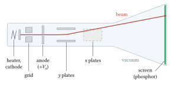
Figure 2.1. The parts of a hot-cathode tube, in side view and not to scale. The heated cathode gives off electrons, the grid sets how many pass, the anode at \(+V_a\) accelerates them, two pairs of plates steer them, and the phosphor glows where they land. All of it sits in a vacuum (section 11 says why).
1. Energy from a potential
The picture. An electron that leaves a cathode nearly at rest and falls through a potential difference \(V\) gains the kinetic energy \(qV\), whatever the shape of the field on the way. This is energy conservation in a static field (Landau and Lifshitz, vol. 2, §17 and §20).
Let \(q\) be the charge in coulombs (for the electron, \(q = -e\) and it gains energy moving towards higher potential; we use magnitudes), \(m\) the rest mass in kg, \(V\) the potential difference in volts. The work done on the charge is \(|q|V\) (F4, section 5), and by the work–energy theorem (F3, section 4) it all becomes kinetic energy. At any speed the kinetic energy is \((\gamma - 1)mc^2\), with \(\gamma = 1/\sqrt{1 - \beta^2}\) and \(\beta = v/c\) the speed as a fraction of the speed of light \(c\) (chapter 1, section 2.1). So
\[ W = (\gamma - 1) m c^2 = |q| V . \]
So \(\gamma = 1 + |q|V/(mc^2)\) and \(\beta = \sqrt{1 - 1/\gamma^2}\). When \(|q|V \ll mc^2\) (for electrons \(m_e c^2 = 511.0\) keV), \(\gamma\) is close to 1, the kinetic energy is close to \(\tfrac12 mv^2\) (the first two terms of the Taylor series of \(\gamma\) in \(\beta^2\), F1, section 8), and setting \(\tfrac12 mv^2 = |q|V\) gives
\[ v = \sqrt{\frac{2|q|V}{m}} . \]
The momentum \(p = \gamma m v\) follows. The table gives it in keV\(/c\): the momentum \(p\) for which \(pc\) is that many keV (F7, section 3); 1 keV\(/c\) is \(5.344 \times 10^{-25}\) kg m/s. The last column is the magnetic rigidity \(B\rho = p/q\), in tesla metres: the product of the magnetic field and the radius of the circle the particle would follow in it, so a stiffer beam needs a stronger field to bend it on the same circle (chapter 1, section 4.1; section 3 below derives it).
Numbers. Computed with CODATA 2018 constants:
| \(V\) | \(\beta\) (exact) | \(v\) (m/s) | error of the non-relativistic \(v\) | \(p\) (keV/\(c\)) | \(B\rho\) (T m) |
|---|---|---|---|---|---|
| 300 V | 0.0343 | \(1.027 \times 10^{7}\) | 0.04 % | 17.5 | \(5.84 \times 10^{-5}\) |
| 2 kV | 0.0882 | \(2.645 \times 10^{7}\) | 0.29 % | 45.3 | \(1.51 \times 10^{-4}\) |
| 4 kV | 0.1244 | \(3.729 \times 10^{7}\) | 0.59 % | 64.1 | \(2.14 \times 10^{-4}\) |
| 30 kV | 0.328 | \(9.84 \times 10^{7}\) | 4.4 % | 178 | \(5.93 \times 10^{-4}\) |
| 100 kV | 0.548 | \(1.64 \times 10^{8}\) | 14 % | 335 | \(1.12 \times 10^{-3}\) |
A modern teaching deflection tube runs its anode at 1 to 5 kV (3B Scientific); the non-relativistic formula is good there to better than 1 per cent. An X-ray tube at 100 kV needs the exact form.
Pre-requisite (continued): Gauss’s law and potentials of simple shapes
Pre-requisite. This section gives you the uniform field between two parallel plates, found from Gauss’s law, and what happens to that field at the plates’ edges. Section 2 uses both to bend the beam. Taught from Tong, Electromagnetism, sections 2.1.4, 2.4.1 and 2.4.2, and Landau and Lifshitz, vol. 2, §36.
Chapter 1 showed that a static field is minus the gradient of a potential, so a charge moving between two points gains \(|q|\) times their potential difference, whatever its path. Two new things are needed here: the field between two flat plates, and how that field ends.
Gauss’s law, restated. The flux of the electric field out of any closed surface (the field’s outward component times area, added over the surface, F2, section 9) equals the charge inside divided by \(\varepsilon_0 = 8.854 \times 10^{-12}\) F/m (F4, section 4). Where the charge has a symmetry, a well-chosen surface turns this into a one-line answer.
One charged sheet. Take a large flat sheet with surface charge \(\sigma\) (C/m\(^2\)). By symmetry its field points straight away from the sheet on both sides, with the same size \(\mathcal{E}\) at equal distances. Draw a short cylinder, a “pillbox”, that pierces the sheet, with end faces of area \(A\) on either side. No flux leaves through the curved side, since the field runs along it. Each end carries flux \(\mathcal{E} A\) outwards, and the charge inside is \(\sigma A\), so
\[ 2\,\mathcal{E}A = \frac{\sigma A}{\varepsilon_0} \quad\Longrightarrow\quad \mathcal{E} = \frac{\sigma}{2\varepsilon_0} . \]
The field does not weaken with distance from an infinite sheet.
Two sheets: the parallel-plate capacitor. Put a sheet with \(+\sigma\) and one with \(-\sigma\) a distance \(d\) apart. Between them both fields point from the positive to the negative sheet and add, giving \(\sigma/\varepsilon_0\). Outside they point opposite ways and cancel. So the field is uniform between the plates and zero outside. A uniform field means the potential changes by the same amount per metre across the gap. With a voltage \(V_d\) between the plates,
\[ \mathcal{E} = \frac{V_d}{d}, \qquad \sigma = \varepsilon_0 \frac{V_d}{d}, \qquad C = \frac{Q}{V_d} = \frac{\varepsilon_0 A}{d}, \]
where \(A\) is the plate area and \(C\) the capacitance in farads, the charge stored per volt (F4, section 6). This is the field section 2 assumes.
Numbers: Thomson’s plates. 225 V across 1.5 cm gives 15 kV/m. The charge needed is \(\sigma = 1.33 \times 10^{-7}\) C/m\(^2\). On plates 5 cm by 2 cm, \(C = 0.59\) pF and \(Q = 1.3 \times 10^{-10}\) C, about \(8 \times 10^{8}\) electrons. That is a very small charge. A gas with ions to spare can easily gather an equal and opposite layer of charge in front of each plate. The two layers then form sheets of their own, and their field cancels the plates’ field across the gap. That is the screening that defeated Hertz.
Where the plates end. The uniform field belongs to infinite plates. Real plates have edges, and there the field lines bulge outwards. This spill of field beyond the edges is called fringing, and the field there the fringing field. Just inside an edge the field is a little weaker than \(V_d/d\); beyond the edge it does not stop but fades over a distance comparable to the gap. A beam does not care about the field at any one point. What it feels is the total sideways push along its path, the field integral \(\int \mathcal{E}\,dz\), since the sideways momentum it gains is \(\Delta p_y = |q|\int \mathcal{E}\,dt = (|q|/v)\int \mathcal{E}\,dz\). So the useful number is an effective length,
\[ l_{eff} = \frac{\int \mathcal{E}\,dz}{V_d/d} , \]
the length of a sharp-edged uniform field that would give the same push. To find it one must solve for the field around the edges (Laplace’s equation, met in the pre-requisite before section 7). Solving it numerically in two dimensions for Thomson’s plates (\(l = 5\) cm, \(d = 1.5\) cm), each edge adds 0.43 to 0.62 of the gap, depending on whether the nearest earthed metal is 4.5 or 18 cm from the axis: the fringing field reaches out until it meets other conductors. So \(l_{eff}\) is 1.26 to 1.37 times \(l\). A fair rule is that each edge adds about half a gap. The two-dimensional model leaves out the plates’ finite width, so treat the numbers as a guide.
Exercises.
- A small tube has plates 2 cm long and 1 cm wide, 5 mm apart, with 100 V between them. Find the field, the surface charge, the capacitance and the charge on each plate.
Answer
\(\mathcal{E} = 100/0.005 = 20\) kV/m. \(\sigma = \varepsilon_0 \mathcal{E} = 1.77 \times 10^{-7}\) C/m\(^2\). \(C = \varepsilon_0 (0.02 \times 0.01)/0.005 = 0.35\) pF. \(Q = C V_d = 3.5 \times 10^{-11}\) C.
- In the same tube a 2 kV electron enters on the axis, midway between plates held at \(+50\) V and \(-50\) V, and leaves 1 mm off the axis towards the positive plate. How much kinetic energy has it gained on leaving the plates? How much does it keep when it has reached the screen, far from the plates, where the potential is again that of the axis?
Answer
Inside the plates the potential rises by \(\mathcal{E}\,y = 20{,}000 \times 0.001 = 20\) V from the axis to where it leaves, so it has gained 20 eV. Beyond the plates it moves back to the axis’s potential, and the static field takes the 20 eV back: the gain depends only on the end points. A deflector turns the beam without changing its final energy.
- With fringing, the effective length of the plates in exercise 1 is about 25.4 mm (0.54 of the gap added at each edge, from the same kind of calculation). How does that change the deflection sensitivity \(l L_s/(2 d V_a)\) of section 2 for \(L_s = 20\) cm and \(V_a = 2\) kV?
Answer
With the nominal \(l = 2\) cm the sensitivity is \(0.020 \times 0.20/(2 \times 0.005 \times 2000) = 0.20\) mm/V. With \(l_{eff} = 25.4\) mm it is 0.254 mm/V, 27 per cent more. The distance \(L_s\) stays measured from the plates’ centre, because the fringing is the same at both ends.
2. Bending with an electric field
The picture. Between two parallel plates the field is uniform and transverse. The electron keeps its forward speed and gains a sideways speed in proportion to the time it spends between them. Beyond the plates it flies straight, so the spot on a distant screen moves in proportion to the plate voltage.
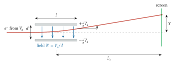
Figure 2.2. Deflection between parallel plates of length \(l\) and gap \(d\). Inside, the electron is pushed towards the positive plate and follows a parabola; outside, it flies straight. Traced back, the straight path meets the axis at the plates’ centre, which is why the screen distance \(L_s\) is measured from there. Not to scale: the angle \(\theta\) is drawn much larger than in a real tube.
Let the plates have length \(l\) (m) along the beam and gap \(d\) (m), with a voltage \(V_d\) across them. Write the field as \(\mathcal{E} = V_d/d\) in V/m (the script letter keeps \(E\) free for total energy). The beam enters along the axis with speed \(v\), after acceleration through \(V_a\). The time between the plates is \(t = l/v\). The transverse acceleration is \(|q|\mathcal{E}/m\), so on leaving
\[ v_y = \frac{|q|\mathcal{E}}{m}\,\frac{l}{v}, \qquad y_1 = \frac{1}{2}\frac{|q|\mathcal{E}}{m}\frac{l^2}{v^2}, \qquad \tan\theta = \frac{v_y}{v} = \frac{|q|\mathcal{E}\,l}{m v^2} . \]
Here \(v_y\) is the sideways speed (acceleration times time), \(y_1\) the sideways distance at the exit (the \(\tfrac12at^2\) of uniform acceleration, F3, section 1), and \(\theta\) the angle of the path to the axis on leaving. Divide \(y_1\) by \(\tan\theta\): everything cancels except \(l/2\). So \(y_1 = (l/2)\tan\theta\): the straight path after the plates, traced backwards, falls by \(y_1\) over a length \(l/2\) and reaches the axis exactly at the middle of the plates. If \(L_s\) is the distance from the plates’ centre to the screen, the spot moves by
\[ Y = L_s \tan\theta = \frac{|q|\mathcal{E}\,l\,L_s}{m v^2} = \frac{l\,L_s\,V_d}{2\,d\,V_a}, \]
using \(m v^2 = 2|q|V_a\). The deflection sensitivity \(Y/V_d = l L_s/(2 d V_a)\) is in m/V.
Two things stand out. First, \(q\) and \(m\) have cancelled: every particle accelerated through the same \(V_a\) is deflected the same way. Electric deflection alone cannot weigh a particle; it measures only its energy per charge. Second, the sensitivity falls as \(1/V_a\): a faster beam is stiffer.
Assumptions: a uniform field that ends sharply at the plate edges (real plates have fringing fields that lengthen the effective plate by an amount comparable to the gap), a flat screen square to the axis (the step to \(L_s\tan\theta\) is then exact, at any angle), and non-relativistic motion. Relativistically, replace \(2|q|V_a\) by \(p v\); at 4 kV that changes the answer by 0.4 per cent, at 30 kV by 2.9 per cent.
Numbers: Thomson’s plates. Thomson’s aluminium plates were about 5 cm long and 1.5 cm apart, and his table gives the field as \(1.5 \times 10^{10}\) in electromagnetic units (the centimetre-gram-second units of his day, F4, section 19, in which potential is in abvolts, \(1\ \text{abvolt} = 10^{-8}\) V, and field in abvolts per centimetre), which is 15 kV/m, or 225 V across the gap (Thomson 1897). If his two fields were what he reckoned, his rays moved at \(\mathcal{E}/B \approx 2.7 \times 10^{7}\) m/s, as found below, so with the true \(e/m_e\) their kinetic energy was about 2.1 keV. The formula then predicts \(\tan\theta \approx 0.18\). Thomson measured 0.073. We return to this gap in section 4.
Numbers: a small tube. With illustrative dimensions \(l = 2\) cm, \(d = 5\) mm, \(L_s = 20\) cm and \(V_a = 2\) kV, the sensitivity is 0.20 mm/V: 100 V on the plates moves the spot 20 mm.
3. Bending with a magnetic field
The picture. A magnetic field does no work. It turns the velocity without changing its size, so in a uniform transverse field the path is a circle. The circle’s radius measures momentum per charge.
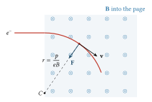
Figure 2.3. An electron entering a uniform field that points into the page. The force \(\mathbf{F} = -e\,\mathbf{v}\times\mathbf{B}\) is always at right angles to the velocity and points to the centre \(C\), so the speed stays the same and the path is an arc of radius \(r = p/(eB)\).
The force is \(\mathbf{F} = q\mathbf{v}\times\mathbf{B}\) (F4, section 10). A cross product stands at right angles to both its factors (F2, section 3), so the force is always across the velocity: it does no work, and \(|\mathbf{v}|\) stays constant. A force of constant size always at right angles to the velocity is what holds a body on a circle, and it must equal the mass times the centripetal acceleration \(v^2/r\) (F2, section 4). With the velocity across \(\mathbf{B}\), the transverse force \(|q|vB\) supplies the centripetal force \(\gamma m v^2/r\) (Landau and Lifshitz, vol. 2, §21), with \(r\) the bending radius, the \(\rho\) of the shared notation (in section 9 \(r\) is the distance from the axis), so
\[ r = \frac{\gamma m v}{|q|B} = \frac{p}{|q| B}, \qquad B r = B\rho = \frac{p}{q} . \]
With \(B\) in tesla and \(p\) in GeV/\(c\), \(B\rho\,[\mathrm{T\,m}] = 3.3356\,p\,[\mathrm{GeV}/c]\) for a singly charged particle. The number comes from the units: a momentum of 1 GeV\(/c\) is \(10^9 e/c\) in kg m/s (an energy of \(10^9 e\) joules divided by \(c\)), and dividing by the charge \(e\) leaves \(10^9/c = 3.3356\) T m. Non-relativistically, \(r = \sqrt{2 m V_a/|q|}\,/B\): unlike the electric case, the magnetic radius depends on \(m/q\). That difference is what lets the two fields together weigh the particle.
If the field fills the whole flight path of length \(L\), the spot is displaced by the sagitta of the arc (Latin for arrow: the height of a bow above its string), the distance between the bent path and the straight line it started on. Figure 2.4 shows where it comes from. The centre \(C\) of the circle lies a distance \(r\) below the starting point. At the end of the flight, a distance \(L\) along, the path is still \(r\) from \(C\), so by Pythagoras it is \(\sqrt{r^2 - L^2}\) above \(C\), and \(r - \sqrt{r^2 - L^2}\) below where it started:
\[ y = r - \sqrt{r^2 - L^2} \approx \frac{L^2}{2r} \qquad (L \ll r). \]
The approximation is the Taylor series \(\sqrt{1 - x} \approx 1 - x/2\) for small \(x\) (F1, section 8): \(\sqrt{r^2 - L^2} = r\sqrt{1 - L^2/r^2} \approx r - L^2/2r\).
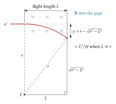
Figure 2.4. A beam that bends on a circle of radius \(r\) over a flight length \(L\) ends a distance \(y = r - \sqrt{r^2 - L^2}\) from the straight line it started on, by the right triangle drawn from the centre \(C\). Not to scale: in a 30 cm tube in the Earth’s field \(L/r\) is about 0.1, not 0.6 as drawn.
If the field fills only a length \(l\) and the beam then drifts, the bend angle is \(\theta \approx l/r\) (an arc of length \(l\) on a circle of radius \(r\) turns through \(l/r\) radians, F1, section 3) and the spot moves \(Y \approx (l/r)(l/2 + L_d)\), where \(L_d\) is the drift from the end of the field to the screen: the same geometry as the electric case.
Numbers: the Earth’s field. The Earth’s field at the surface is about 25 to 65 μT depending on place. Take 50 μT across a 30 cm tube. At 2 kV, \(r = 3.02\) m and the spot moves 14.9 mm; at 5 kV, \(r = 4.78\) m and it moves 9.4 mm. Only the component across the beam counts, so turning the tube on the bench moves the spot. Braun noted exactly this in his description of the tube, and used a small magnet near the tube to set the beam’s direction (Lewis and Mann 1948, quoting Braun).
Numbers: Thomson’s coils. Thomson’s field was about 5.5 gauss, 0.55 mT. For electrons at \(2.8 \times 10^{7}\) m/s, the speed in his table, that gives, with the true \(e/m_e\), \(r = 0.29\) m, and over 5 cm a bend of 0.17 rad. He saw 0.073 rad; section 4 takes up the difference.
Pre-requisite (continued): Errors and their propagation
Pre-requisite. This section gives you how errors in measured quantities carry into a result built from products and powers, the difference between random and systematic error, effective values of fields and lengths, and the logarithmic derivative as a measure of sensitivity. Section 4 uses them to judge Thomson’s values of \(m/e\), and section 6 to see why a hot cathode’s current is so hard to hold steady. None of the books listed for this course treats the subject as such; it is standard laboratory practice, taught here in the same terms as chapter 1.
Chapter 1 showed that when two independent measurements are subtracted, their variances add: \(\sigma^2 = \sigma_a^2 + \sigma_b^2\). Thomson’s results are not differences but products and quotients of several measured quantities, so we need the general rule.
The general rule. Let a result \(f\) depend on measured quantities \(x_1, x_2, \ldots\), each with a small error \(\delta x_i\). Each partial derivative \(\partial f/\partial x_i\) says how fast \(f\) changes when \(x_i\) alone changes (F1, section 9), so to first order the result changes by
\[ \delta f = \sum_i \frac{\partial f}{\partial x_i}\,\delta x_i . \]
If the errors are random and independent, with standard deviations \(\sigma_i\) (F6, sections 3 and 8), square the sum and average it over many repeats. The squares give \((\partial f/\partial x_i)^2\sigma_i^2\). Each cross term holds a product \(\delta x_i\,\delta x_j\) of two independent errors, as often positive as negative, which averages to zero. So
\[ \sigma_f^2 = \sum_i \left(\frac{\partial f}{\partial x_i}\right)^2 \sigma_i^2 . \]
For a difference \(f = a - b\) both derivatives have size 1, which is chapter 1’s rule.
Products and powers. Most formulas in this chapter have the form \(f = k\,x^a y^b z^c\). Take the natural logarithm, \(\ln f = \ln k + a\ln x + b\ln y + c\ln z\), and differentiate, using \(d(\ln x) = dx/x\) (F1, section 4):
\[ \frac{\delta f}{f} = a\,\frac{\delta x}{x} + b\,\frac{\delta y}{y} + c\,\frac{\delta z}{z} . \]
So relative errors combine, each weighted by its power, and for independent random errors
\[ \left(\frac{\sigma_f}{f}\right)^2 = a^2\left(\frac{\sigma_x}{x}\right)^2 + b^2\left(\frac{\sigma_y}{y}\right)^2 + c^2\left(\frac{\sigma_z}{z}\right)^2 . \]
Dividing by a quantity is a power of \(-1\), which weighs the same as multiplying by it. A square doubles the relative error it brings.
Numbers: Thomson’s crossed fields. His result was \(m/e = B^2 l/(\mathcal{E}\theta)\). Suppose, for illustration, that \(B\) is known to 3 per cent, \(l\) to 5, \(\mathcal{E}\) to 2 and \(\theta\) to 6 per cent (8 divisions of deflection read to half a division). Then
\[ \frac{\sigma_{m/e}}{m/e} = \sqrt{(2 \times 3)^2 + 5^2 + 2^2 + 6^2}\ \text{per cent} = 10\ \text{per cent}. \]
The magnetic field matters most, because it enters squared. If the errors were not independent and all pushed the same way, they would add directly: \(6 + 5 + 2 + 6 = 19\) per cent, the worst case.
Random and systematic error. A random error changes from one run to the next, sometimes up and sometimes down. Averaging \(N\) runs reduces it by \(\sqrt{N}\). A systematic error is the same in every run: a meter that reads 5 per cent high, a length taken from the drawing when the field extends beyond it. Averaging does nothing to it. It shows only when the method or the apparatus is changed.
Thomson’s seven crossed-field runs scattered by roughly \(\pm 15\) per cent about 1.3 (in units of \(10^{-7}\) g/abC). From the scatter alone, the mean of seven runs is good to about \(15/\sqrt 7 \approx 6\) per cent, or 0.08 in these units. Yet the mean is about 2.3 times the true value of 0.57: it is off by 0.7, about nine times what the scatter allows. An error that large against so small a random one is systematic. The clue was there in his own data: his first method, with different apparatus, gave a different answer. The agreement between gases and cathodes, which was the point of his paper, is untouched by a systematic error common to every run.
Effective values. Formulas like \(\theta = |q|\mathcal{E}l/(mv^2)\) assume a field of one strength over a length \(l\) and nothing outside it. A real field rises and falls, and what the beam feels is its integral along the path. So one defines an effective length \(l_{eff} = \int \mathcal{E}\,dz/\mathcal{E}_0\), with \(\mathcal{E}_0\) the field at the centre, or an effective field \(\mathcal{E}_{eff} = \int \mathcal{E}\,dz/l\). Using the nominal value where the effective one belongs is a systematic error. The previous pre-requisite found \(l_{eff} \approx 1.3\,l\) for Thomson’s plates. If his magnetic integral had been right, that alone would have made his \(m/e\) 1.3 times too large, through the formula in section 4.
Sensitivity: the logarithmic derivative. When a result depends steeply on one input, the useful number is
\[ S = \frac{d\ln f}{d\ln x} = \frac{x}{f}\,\frac{df}{dx}, \]
the percentage change in \(f\) for a 1 per cent change in \(x\) (to first order). For a power law \(x^a\), \(S = a\). For an exponential it grows with the exponent. Richardson’s law (section 6) is \(J = A_R T^2 \exp(-e\phi_w/k_B T)\), with \(J\) the current density, \(T\) the temperature in kelvin, \(e\phi_w\) the work function and \(k_B\) Boltzmann’s constant. Its logarithm is \(\ln J = \ln A_R + 2\ln T - e\phi_w/(k_B T)\), and \(d/d\ln T = T\,d/dT\) gives
\[ S = \frac{d\ln J}{d\ln T} = 2 + \frac{e\phi_w}{k_B T} . \]
For tungsten at 2500 K, \(k_B T = 0.2154\) eV and \(e\phi_w/k_B T = 21.03\), so \(S = 23.0\). A 1 per cent rise in temperature raises the current by 23 per cent to first order. The exact ratio is
\[ \frac{J(1.01\,T)}{J(T)} = 1.01^2 \exp\!\left[21.03\left(1 - \frac{1}{1.01}\right)\right] = 1.256 , \]
26 per cent. When \(S\,\delta x/x\) is not small, the first-order rule falls short; here \(\exp(0.230) = 1.26\) does better, because the logarithm of \(J\), not \(J\) itself, is close to linear in \(\ln T\). To hold the current to 1 per cent, the temperature must be held to \(1/23\) of a per cent, 1.1 K at 2500 K. In the same way \(\partial\ln J/\partial\phi_w = -e/(k_B T) = -4.64\) per volt, so an error of 0.01 V in the work function moves the predicted current by 4.6 per cent.
Exercises.
- Thomson’s first method gives \(m/e = I_T^2 Q/(2W_{tot})\). If \(I_T\) is known to 4 per cent, \(Q\) to 5 per cent and \(W_{tot}\) to 8 per cent, independently, what is the relative error in \(m/e\)?
Answer
\(\sqrt{(2 \times 4)^2 + 5^2 + 8^2} = \sqrt{153} = 12.4\) per cent.
- The Child–Langmuir law of section 7 gives \(J \propto V^{3/2}/d^2\). The gap \(d = 5\) mm is known to \(\pm 0.1\) mm and the voltage to 0.5 per cent. Which matters more, and what is the error in the predicted \(J\)?
Answer
The gap is known to 2 per cent and enters as \(d^{-2}\), contributing \(2 \times 2 = 4\) per cent. The voltage contributes \(1.5 \times 0.5 = 0.75\) per cent. Together \(\sqrt{16 + 0.56} = 4.1\) per cent. The gap dominates.
- Repeat the sensitivity calculation for tungsten at 2000 K. How steady must the temperature be to hold the current to 1 per cent?
Answer
At 2000 K, \(k_B T = 0.1723\) eV and \(e\phi_w/k_B T = 26.3\), so \(S = 28.3\). The temperature must be held to \(1/28.3\) of a per cent, 0.71 K. A cooler cathode is even more sensitive.
- A coil’s field is calibrated 5 per cent high, and the same coil is used in all of a set of crossed-field runs. What happens to the mean value of \(m/e\), and to the scatter between runs?
Answer
\(m/e \propto B^2\), so every run, and the mean, comes out about 10 per cent high. The scatter between runs is unchanged, so nothing in the data reveals the error. Only a separate check of the field would.
4. Weighing the ray: Thomson’s two methods
First method: heat and charge. Thomson let the rays fall through a slit into an insulated cylinder connected to an electrometer (a sensitive voltmeter that draws no current; from the voltage on a known capacitance it gives the charge), which measured the total charge \(Q\) (C). A thermojunction (a thermocouple: a joint of two different metals that gives a small voltage in proportion to how much it is warmed) of thin iron and copper behind the slit measured the heat, and so the total kinetic energy \(W_{tot}\) (J). A known magnetic field bent the rays and he measured the radius \(\rho\) of their path. If \(N\) particles each of charge \(e\) and mass \(m\) arrive with speed \(v\),
\[ N e = Q, \qquad \tfrac{1}{2} N m v^2 = W_{tot}, \qquad \frac{m v}{e} = B\rho \equiv I_T . \]
The symbol \(\equiv\) means “is defined as”: \(I_T\) is Thomson’s own name for the product \(B\rho\). Dividing the second by the first gives \(\tfrac12 m v^2/e = W_{tot}/Q\), and with the third,
\[ v = \frac{2 W_{tot}}{Q\,I_T}, \qquad \frac{m}{e} = \frac{I_T^2\,Q}{2\,W_{tot}} . \]
Thomson’s units were the centimetre-gram-second electromagnetic ones (F4, section 19): \(m/e\) in grams per abcoulomb (1 abcoulomb = 10 C), energy in ergs (\(1\ \text{erg} = 10^{-7}\) J), magnetic field in gauss (\(1\ \text{G} = 10^{-4}\) T), so \(10^{-7}\) g/abC is \(10^{-11}\) kg/C. In his first tube, with air, one run gave \(W_{tot}/Q = 4.6 \times 10^{11}\) erg/abC, which is 4600 V, and \(I_T = 230\) gauss cm, which is \(2.30 \times 10^{-4}\) T m. Then \(m/e = 0.57 \times 10^{-7}\) g/abC and \(v = 4 \times 10^{7}\) m/s. That run happens to land on the modern value, \(0.5686 \times 10^{-7}\). Over all his runs with slits, the means were 0.40 to 0.54 \(\times 10^{-7}\), so \(e/m\) between \(1.85\) and \(2.5 \times 10^{11}\) C/kg: 5 to 42 per cent above the true value. He thought these values of \(m/e\) too small, because the gas around the collector conducted and leaked charge.
Second method: crossed fields. Thomson put the plates and a pair of coils on the same stretch of tube (figure 2.5). The electric field points across the beam between the plates, the magnetic field across both the beam and the electric field, so the two are “crossed”.
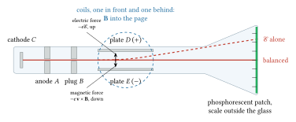
Figure 2.5. Thomson’s crossed-field tube of 1897, after his description, not to scale. The anode \(A\) and the plug \(B\) each have a slit, which together cut a narrow beam. Between the plates \(D\) and \(E\) the electric force on the electrons is up (towards the positive plate) and the magnetic force of the coils, with \(\mathbf{B}\) into the page, is down. Alone, the electric field moves the patch on the glass (dashed); with the coil current adjusted, the two forces balance and the beam goes straight. The electric field alone turns the beam through
\[ \theta_E = \frac{e\,\mathcal{E}\,l}{m v^2}, \]
and the magnetic field alone through \(\theta_B = e B l/(m v)\) (section 3: \(\theta \approx l/r\) with \(r = mv/(eB)\)). He adjusted the coil current until the two deflections were equal. Setting \(\theta_E = \theta_B\) gives the speed,
\[ v = \frac{\mathcal{E}}{B}, \]
and putting it back into \(\theta_E\) gives
\[ \frac{e}{m} = \frac{\mathcal{E}\,\theta_E}{B^2\,l}, \qquad\text{or in Thomson's form}\qquad \frac{m}{e} = \frac{B^2 l}{\mathcal{E}\theta} . \]
When the fields are applied together and opposed, the spot does not move at all for particles of speed \(\mathcal{E}/B\): the same arrangement is a velocity filter.
His numbers. In the first row of his table, for air: \(\theta = 8/110\) rad, \(B = 5.5\) gauss, \(\mathcal{E} = 1.5 \times 10^{10}\) emu, \(l = 5\) cm. In SI, \(\mathcal{E} = 15\) kV/m, \(B = 0.55\) mT, \(l = 0.05\) m. Then \(v = 2.73 \times 10^{7}\) m/s and \(e/m = 7.2 \times 10^{10}\) C/kg, which is \(m/e = 1.39 \times 10^{-7}\) g/abC (his table prints 1.3 and \(2.8 \times 10^{9}\) cm/s). Across all seven runs, with air, hydrogen, carbonic acid and two cathode metals, he found \(m/e\) from 1.1 to \(1.5 \times 10^{-7}\), independent of the gas. The true value is 0.57. His crossed-field results are about 2 to 3 times too small in \(e/m\) (Thomson 1897).
Where did the factor go? At balance \(v = \mathcal{E}/B\), so \(\theta = (e/m)B^2 l/\mathcal{E}\) whatever the speed. With the true \(e/m\) and his nominal fields, the balanced deflection should have been about 0.18 rad (section 2), and he saw 0.073. To see which errors can do this, suppose the electric field acts with strength \(\mathcal{E}_{eff}\) over a length \(l_E\) and the magnetic field with \(B_{eff}\) over \(l_B\), while he computed with \(\mathcal{E}\), \(B\) and \(l\). Then \(\theta = (e/m)\mathcal{E}_{eff} l_E/v^2 = (e/m) B_{eff} l_B/v\), and the same algebra gives (solve the balance for \(v = \mathcal{E}_{eff}l_E/(B_{eff}l_B)\), put it into \(\theta\), and substitute the true \(m/e\) into Thomson’s formula)
\[ \left(\frac{m}{e}\right)_{\text{his}} = \frac{B^2 l}{\mathcal{E}\,\theta} = \frac{m}{e}\;\frac{\mathcal{E}_{eff}\,l_E/(\mathcal{E}\,l)}{\left[B_{eff}\,l_B/(B\,l)\right]^2} . \]
His \(m/e\) comes out 2.4 times too large only if the magnetic field’s integral along the path was smaller than he reckoned, relative to the electric one: with the electric integral right, the magnetic one would have to be \(1/\sqrt{2.44} = 0.64\) of his value. Screening goes the wrong way. Thomson recorded that near the edge of good vacuum the deflected patch crept back while the voltage was held, as gas between the plates conducted; but a weakened electric field makes \(m/e\) come out smaller, not larger. Fringing of the plates’ field lengthens \(l_E\) and goes the right way. Thomson noted that he had made no allowance for the coils’ field outside the plates, which points the opposite way and so lowers the magnetic integral; he wrote that this made his values of \(m/e\) larger than the corrected ones would be (Thomson 1897). That also goes the right way. What remains is the plates’ fringing and an error in the field he assigned to the coils, the reversed field outside the plates among it. His table cannot separate these. What survived the factor was the conclusion: the ratio was the same for every gas and cathode, and a thousand times beyond the hydrogen ion.
5. Charge and mass separately: Millikan
\(e/m\) is a ratio. To get the mass, one needs \(e\). Robert Millikan and Harvey Fletcher at the University of Chicago began in 1909 to balance charged oil drops between horizontal plates against gravity, watching them through a microscope. A drop’s charge always came in whole multiples of one unit. Millikan’s value, \(4.774 \times 10^{-10}\) electrostatic units (statcoulombs, the Gaussian unit of charge of F4, section 19; 1 statcoulomb \(= 3.3356 \times 10^{-10}\) C), is \(1.592 \times 10^{-19}\) C (Millikan 1913). It is 0.61 per cent below today’s exact value of \(1.602176634 \times 10^{-19}\) C; the error is usually put down to the value he used for the viscosity of air, which sets the drag on a falling drop.
With the modern \(e/m_e\), Millikan’s \(e\) gives \(m_e = 9.054 \times 10^{-31}\) kg against today’s \(9.109 \times 10^{-31}\) kg. The proton is 1836.15 times heavier.
Pre-requisite: Special functions and integrals (Bessel, Gaussian, error function)
Pre-requisite. This section gives you three definite integrals: the Gaussian integral, the integral of \(p\) times a Gaussian from a lower limit to infinity, and the integral of \(1/(a^2+z^2)^3\) along a line. Section 6 uses the first two to count the electrons that escape a hot metal, and section 9 uses the third for the strength of a coil lens. Taught from Landau and Lifshitz, vol. 5, §29 (the integrals that come with the Maxwellian distribution). Bessel functions are not needed in this chapter, and the error function appears only once, below.
1. The Gaussian integral. The function \(e^{-x^2}\) has no antiderivative in terms of elementary functions, yet its integral over the whole line is exact:
\[ I = \int_{-\infty}^{\infty} e^{-x^2}\,dx = \sqrt{\pi} . \]
The trick is to square it and read the square as an integral over a plane:
\[ I^2 = \int_{-\infty}^{\infty} e^{-x^2}dx \int_{-\infty}^{\infty} e^{-y^2}dy = \iint e^{-(x^2+y^2)}\,dx\,dy . \]
In polar coordinates (F2, section 13) \(x^2 + y^2 = r^2\) and the area element is \(r\,dr\,d\varphi\): a small patch bounded by two circles \(dr\) apart and two rays \(d\varphi\) apart is \(dr\) wide and \(r\,d\varphi\) long (F2, section 8). So
\[ I^2 = \int_0^{2\pi} d\varphi \int_0^{\infty} e^{-r^2}\,r\,dr = 2\pi \left[-\tfrac12 e^{-r^2}\right]_0^{\infty} = 2\pi \times \tfrac12 = \pi . \]
The extra factor \(r\) is what makes the radial integral easy. Now scale it. With \(x = u/(\sqrt2\,\sigma)\),
\[ \int_{-\infty}^{\infty} e^{-u^2/(2\sigma^2)}\,du = \sqrt{2\pi}\,\sigma . \]
In statistical physics the exponent is a kinetic energy over \(k_B T\): \(e^{-p^2/(2mk_BT)}\), with \(p\) a momentum component (kg m/s), \(m\) the mass, \(T\) the temperature and \(k_B = 1.380649 \times 10^{-23}\) J/K. This is the case \(\sigma^2 = m k_B T\):
\[ \int_{-\infty}^{\infty} e^{-p^2/(2mk_BT)}\,dp = \sqrt{2\pi m k_B T} . \]
This is the normalising constant of the Gaussian distribution of F6, section 5.
Numbers. For electrons at 2500 K, \(\sqrt{m_e k_B T} = 1.77 \times 10^{-25}\) kg m/s and \(\sqrt{2\pi m_e k_B T} = 4.44 \times 10^{-25}\) kg m/s. A 2 kV beam has \(p = 45.3\) keV/\(c\) \(= 2.42 \times 10^{-23}\) kg m/s. The thermal spread of momentum is 0.73 per cent of the beam’s momentum, a number that returns in the next section as an angle.
One more integral comes from the same source. Write \(G(\alpha) = \int e^{-\alpha x^2}dx = \sqrt{\pi/\alpha}\) (substitute \(x = u/\sqrt\alpha\) in \(I\)), and differentiate both sides with respect to \(\alpha\). The integral is a sum of many terms \(e^{-\alpha x^2}dx\), and the derivative of a sum is the sum of the derivatives, so we may differentiate inside the integral (it is safe here because the integrand and its derivative both die away fast at large \(x\)). The partial derivative of \(e^{-\alpha x^2}\) with respect to \(\alpha\) is \(-x^2e^{-\alpha x^2}\), which brings down \(-x^2\):
\[ \int_{-\infty}^{\infty} x^2 e^{-\alpha x^2}\,dx = -\frac{dG}{d\alpha} = \frac{\sqrt\pi}{2}\,\alpha^{-3/2} . \]
This gives the mean square of a Gaussian variable, and so mean energies.
2. A Gaussian with a factor \(p\), from a lower limit. Integrals of \(e^{-p^2/(2mk_BT)}\) from a finite lower limit \(p_0\) are not elementary. But with an extra factor \(p\) the integrand becomes an exact derivative. Substitute \(u = p^2/(2mk_BT)\), so \(du = p\,dp/(mk_BT)\):
\[ \int_{p_0}^{\infty} p\,e^{-p^2/(2mk_BT)}\,dp = m k_B T \int_{u_0}^{\infty} e^{-u}\,du = m k_B T\,e^{-p_0^2/(2mk_BT)} . \]
This is the integral of section 6. There the factor \(p_z/m\) is the electron’s speed towards the surface, so dividing by \(m\) gives \(k_B T\,e^{-p_0^2/(2mk_BT)}\), and the factor \(e^{\mu/k_BT}\) carried along turns the exponent into \(-e\phi_w/k_BT\). The factor \(p\) is no accident. It appears whenever we count particles crossing a surface rather than particles present, because faster ones cross more often.
Without the factor \(p\) one meets the complementary error function,
\[ \operatorname{erfc}(x) = \frac{2}{\sqrt\pi}\int_x^{\infty} e^{-t^2}\,dt \approx \frac{e^{-x^2}}{x\sqrt\pi}\quad (x \gg 1), \]
which counts the particles present beyond \(p_0\). It is tabulated, and every numerical library has it.
3. An integral along the axis of a coil. Section 9 needs
\[ \int_{-\infty}^{\infty}\frac{dz}{(a^2+z^2)^3} = \frac{3\pi}{8a^5} , \]
with \(a\) the coil radius (m) and \(z\) the distance along the axis. Substitute \(z = a\tan\psi\), where \(\psi\) is the angle between the coil’s plane and the line from its rim to the point \(z\) on the axis, and \(\sec\psi = 1/\cos\psi\). Then \(dz = a\sec^2\psi\,d\psi\) (the derivative of \(\tan\psi\) is \(\sec^2\psi\), F1, section 2), \(a^2 + z^2 = a^2(1 + \tan^2\psi) = a^2\sec^2\psi\), and \(z\) from \(-\infty\) to \(\infty\) becomes \(\psi\) from \(-\pi/2\) to \(\pi/2\):
\[ \int_{-\infty}^{\infty}\frac{dz}{(a^2+z^2)^3} = \int_{-\pi/2}^{\pi/2}\frac{a\sec^2\psi}{a^6\sec^6\psi}\,d\psi = \frac{1}{a^5}\int_{-\pi/2}^{\pi/2}\cos^4\psi\,d\psi . \]
Use \(\cos^2\psi = (1+\cos 2\psi)/2\) twice:
\[ \cos^4\psi = \frac{3}{8} + \frac{1}{2}\cos 2\psi + \frac{1}{8}\cos 4\psi . \]
Over an interval of length \(\pi\), \(\cos 2\psi\) runs through one whole period and \(\cos 4\psi\) through two, so both integrate to zero, leaving \(3\pi/8\). The same substitution gives the companion integral
\[ \int_{-\infty}^{\infty}\frac{dz}{(a^2+z^2)^{3/2}} = \frac{1}{a^2}\int_{-\pi/2}^{\pi/2}\cos\psi\,d\psi = \frac{2}{a^2} . \]
Numbers. For \(a = 25\) mm, \(3\pi/(8a^5) = 1.206 \times 10^{8}\) m\(^{-5}\) and \(2/a^2 = 3200\) m\(^{-2}\); numerical integration agrees with both to the last digit shown.
Exercises.
- Use the result for \(\int x^2 e^{-\alpha x^2}dx\) to show that a Gaussian \(e^{-x^2/(2\sigma^2)}\), normalised to unit area, has mean square \(\langle x^2\rangle = \sigma^2\).
Answer
With \(\alpha = 1/(2\sigma^2)\), \(\int x^2 e^{-\alpha x^2}dx = (\sqrt\pi/2)(2\sigma^2)^{3/2} = \sqrt{2\pi}\,\sigma^3\). Dividing by the area \(\sqrt{2\pi}\,\sigma\) gives \(\sigma^2\).
- For molecules of mass \(m\) at temperature \(T\), the number crossing unit area per second from one side is \(n\) times the mean of \(v_z\) over molecules moving towards the surface, with those moving away counted as zero. Using the integrals above, show that this mean is \(\sqrt{k_BT/(2\pi m)}\), and that this equals \(\bar v/4\) where \(\bar v = \sqrt{8k_BT/(\pi m)}\) is the mean speed. Evaluate it for nitrogen at 293 K, and the flux at 0.1 Pa (\(n = 2.47 \times 10^{19}\) m\(^{-3}\)).
Answer
The normalised distribution of \(v_z\) is \(e^{-mv_z^2/(2k_BT)}/\sqrt{2\pi k_BT/m}\). Integral 2 with \(p\) replaced by \(v_z\) and \(p_0 = 0\) gives \(\int_0^\infty v_z e^{-mv_z^2/(2k_BT)}dv_z = k_BT/m\). Dividing, \((k_BT/m)/\sqrt{2\pi k_BT/m} = \sqrt{k_BT/(2\pi m)}\). And \(\bar v/4 = \sqrt{8k_BT/(\pi m)}/4 = \sqrt{k_BT/(2\pi m)}\). For nitrogen at 293 K it is 117.6 m/s, so the flux is \(2.47 \times 10^{19} \times 117.6 = 2.9 \times 10^{21}\) molecules per m\(^2\) per second. This is O’Hanlon’s flux \(n\bar v/4\) (section 2.1.4).
- By the same substitution, show that \(\int_{-\infty}^{\infty} dz/(a^2+z^2)^2 = \pi/(2a^3)\).
Answer
With \(z = a\tan\psi\) the integrand becomes \(\cos^2\psi/a^3\). \(\int_{-\pi/2}^{\pi/2}\cos^2\psi\,d\psi = \int (1+\cos 2\psi)/2\,d\psi = \pi/2\). So the integral is \(\pi/(2a^3)\).
Pre-requisite: Maxwell-Boltzmann distribution
Pre-requisite. This section gives you the Boltzmann factor \(e^{-E/k_BT}\), the Maxwellian distribution of momenta, and the size of \(k_BT\) at a cathode’s temperature. Section 6 uses them for the electrons that leave a hot wire, and the next pre-requisite shows that inside a metal they describe only the high-energy tail of the Fermi–Dirac distribution. Taught from Landau and Lifshitz, vol. 5, §28 (the Gibbs distribution), §29 (the Maxwellian distribution) and §38, and O’Hanlon, sections 2.1.1 and 2.1.2.
The idea. In a body at temperature \(T\), energy is passed around at random among all its parts. Low-energy states are then more likely than high-energy ones, by a definite rule: the probability of finding a small part of the body in a particular state of energy \(E\) is proportional to
\[ e^{-E/k_BT}, \]
the Boltzmann factor, met in F6, section 13. Here \(k_B = 1.380649 \times 10^{-23}\) J/K \(= 8.617 \times 10^{-5}\) eV/K. Only differences of energy matter: moving the zero of \(E\) changes every probability by the same factor, which the normalisation removes.
Where the factor comes from: a column of gas. Take a tall column of gas at one temperature, in a gravitational field \(g\). A thin horizontal slab of thickness \(dh\) and area \(A\) holds \(nA\,dh\) molecules of mass \(m\), with \(n\) the number per m\(^3\). The pressure below the slab must exceed the pressure above it by their weight per unit area:
\[ dp = -n m g\,dh . \]
For an ideal gas \(p = n k_B T\) (F6, section 10), so at fixed \(T\), \(dp = k_B T\,dn\). Then \(dn/n = -(mg/k_BT)\,dh\), a quantity whose rate of change is proportional to itself, which decays exponentially (F1, section 10):
\[ n(h) = n(0)\,e^{-mgh/k_BT} . \]
The chance of finding a molecule at height \(h\) falls as \(e^{-U/k_BT}\), with \(U = mgh\) its potential energy. For nitrogen at 293 K the length \(k_BT/(mg)\) is 8.9 km, about the scale height of the lower atmosphere. Landau and Lifshitz show (§38) that the same holds in any potential, and (§28) that the rule holds for any state of any small system in contact with a large one. The reason is counting: when the small system takes an energy \(E\), the large one has \(E\) less, and its number of available arrangements falls by the factor \(e^{-E/k_BT}\); that is what temperature means.
The scale of \(k_BT\). At 293 K, \(k_BT = 0.0252\) eV. At 1000 K it is 0.0862 eV, and at 2500 K, a tungsten cathode, 0.2154 eV. One electronvolt corresponds to 11,605 K. A work function of 4.53 eV is 21 times \(k_BT\) even at 2500 K, so \(e^{-21} = 7.6 \times 10^{-10}\) is the order of the fraction of electrons with enough energy. That is why the cathode must be white hot and why its current climbs so steeply with temperature.
Accelerator use: climbing a retarding potential. Electrons leaving a hot cathode face, just in front of it, a small hill of potential made by their own space charge (section 7). Only those with enough energy to climb it pass. The Boltzmann factor says what fraction that is: a hill of height \(V_r\) volts passes the fraction \(e^{-eV_r/k_BT}\) of the current. (This is exact for the current, not only the number, as the next pre-requisite shows.) At 2500 K a hill of 0.2 V passes 40 per cent, 0.5 V passes 9.8 per cent, and 1 V only 0.96 per cent. Turned round, this is a thermometer for electrons: plot the logarithm of the current against a retarding voltage, and the slope is \(-e/k_BT\).
The Maxwellian distribution. For a free particle the energy is all kinetic, \(E = (p_x^2 + p_y^2 + p_z^2)/2m\). The Boltzmann factor then splits into three independent factors, one for each component of momentum. Picture an imaginary space whose three axes are \(p_x\), \(p_y\) and \(p_z\), momentum space: each particle is a point in it, and a small box of sides \(dp_x\), \(dp_y\), \(dp_z\) holds the particles whose momentum components lie in those ranges. Its volume is written \(d^3p = dp_x\,dp_y\,dp_z\). The probability that the momentum lies in such a box is
\[ dw = \frac{1}{(2\pi m k_BT)^{3/2}}\;e^{-(p_x^2+p_y^2+p_z^2)/(2mk_BT)}\;dp_x\,dp_y\,dp_z . \]
The constant in front makes the total probability 1: each of the three Gaussian integrals gives \(\sqrt{2\pi m k_BT}\) (previous pre-requisite). Each component of momentum is a Gaussian with standard deviation \(\sqrt{mk_BT}\), so each component of velocity has spread \(\sigma_v = \sqrt{k_BT/m}\). The mean square of each momentum component is \(mk_BT\), so each carries a mean kinetic energy \(\tfrac12 k_BT\), and the mean total is \(\tfrac32 k_BT\) (Landau and Lifshitz, vol. 5, §29). This is Maxwell’s distribution of 1860.
Numbers: electrons at 2500 K. \(\sigma_v = \sqrt{k_BT/m_e} = 1.95 \times 10^{5}\) m/s. The mean speed \(\sqrt{8k_BT/(\pi m_e)}\) is \(3.1 \times 10^{5}\) m/s, and the mean energy \(\tfrac32 k_BT = 0.32\) eV: a few tenths of an electronvolt. For nitrogen at 293 K the mean speed is 471 m/s, a figure section 11 needs.
What the spread means for a beam. An electron leaves the cathode with a random sideways velocity of about \(\sigma_v\). After acceleration through 2 kV its forward speed is \(2.645 \times 10^{7}\) m/s, so its direction is spread by \(1.95 \times 10^{5}/2.645 \times 10^{7} = 7.4\) mrad, if nothing else acts. No lens can remove this spread, only trade angle against size, so it sets the smallest spot a gun can make. Chapter 7 calls it the thermal emittance.
The energies of the electrons that leave. The electrons that leave a surface are not a fair sample of a Maxwellian, because fast ones reach the surface more often than slow ones. The next pre-requisite shows that the escaping electrons carry a mean energy of \(2k_BT\), 0.43 eV at 2500 K, rather than \(\tfrac32 k_BT\).
Exercises.
- A retarding-field analyser in front of a cathode passes 12 per cent of the current at 0.5 V compared with zero retarding voltage. What is the cathode’s temperature?
Answer
\(e^{-0.5/(k_BT)} = 0.12\), with \(k_BT\) in eV, gives \(k_BT = 0.5/\ln(1/0.12) = 0.236\) eV, so \(T = 0.236 \times 11{,}605 = 2740\) K.
- At what temperature would \(k_BT\) be 1 eV? Why can a tungsten cathode not simply be run hotter to make its emission easy?
Answer
11,605 K. Tungsten melts at 3695 K, and evaporates fast well below that. Even at 2500 K the work function is still 21 \(k_BT\), so emission must come from the far tail of the distribution. Chapter 7 shows how coatings with lower work functions get round this.
- Using the Maxwellian and the result \(\langle x^2\rangle = \sigma^2\) for a Gaussian, show that the mean kinetic energy is \(\tfrac32 k_BT\).
Answer
Each momentum component is a Gaussian with \(\sigma^2 = mk_BT\), so \(\langle p_x^2\rangle = mk_BT\) and \(\langle p_x^2/2m\rangle = \tfrac12 k_BT\). The three components are independent and add: \(\tfrac32 k_BT\).
Pre-requisite: Electrons in metals, Fermi-Dirac statistics, work function
Pre-requisite. This section gives you the free-electron picture of a metal, the counting of electron states (\(2/h^3\) per unit volume of momentum space), the Fermi–Dirac occupation and its Boltzmann tail, the work function, and current density as a flux of electrons across a surface. Section 6 puts them together into Richardson’s law. Taught from Landau and Lifshitz, vol. 5, §39, §53, §56 and §57; Kuffel, Zaengl and Kuffel, sections 5.3 and 5.3.3; and O’Hanlon, section 2.1.4.
A metal as a box of free electrons. In a metal each atom gives one or more of its outer electrons to the crystal as a whole. These conduction electrons are not bound to any atom. Inside the metal the pulls of the positive ions roughly average out, so an electron moves as if on a flat floor. At the surface there is a step: leaving would separate it from the positive charge it leaves behind, and that costs energy. So the conduction electrons sit in a potential well with a flat bottom and walls at the surface. The simplest model, the free-electron gas, keeps only this: electrons moving freely in a box, interacting with each other only through Pauli’s rule that no two may share a state (F7, section 9).
For copper, one electron per atom, density 8.96 g/cm\(^3\) and 63.55 g/mol give \(n = 8.49 \times 10^{28}\) conduction electrons per m\(^3\).
Counting the states. Quantum mechanics treats an electron of momentum \(p_x\) as a wave of wavelength \(h/p_x\), with \(h = 6.626 \times 10^{-34}\) J s (de Broglie’s relation, F7, section 8). In a box of side \(L\), take the wave to repeat itself across the box (periodic boundary conditions; the walls’ details do not matter for a large box). Then a whole number of wavelengths must fit: \(L = n_x h/p_x\), or
\[ p_x = \frac{h\,n_x}{L}, \qquad n_x = 0, \pm1, \pm2, \ldots \]
and the same for \(y\) and \(z\). The allowed momenta form a cubic lattice in momentum space (the space of \(p_x\), \(p_y\), \(p_z\) of the previous pre-requisite) with spacing \(h/L\), one point in each cell of volume \((h/L)^3 = h^3/V\), with \(V = L^3\). Each point holds two states, one for each orientation of the electron’s spin, “up” or “down” (F7, section 9). So the number of states with momentum in \(d^3p = dp_x\,dp_y\,dp_z\) is \(2V\,d^3p/h^3\), or per unit volume of metal
\[ \frac{2}{h^3}\,d^3p . \]
This is the factor \(2/h^3\) of section 6 (Landau and Lifshitz, vol. 5, §56, with \(g = 2s + 1 = 2\) spin states and \((2\pi\hbar)^3 = h^3\)).
Filling the box at zero temperature. At \(T = 0\) the electrons fill the lowest states, one per state, up to some largest momentum \(p_F\). Since the energy \(p^2/2m_e\) depends only on the length of the momentum, the filled states make a ball in momentum space, the Fermi sphere, of radius \(p_F\) (named after Enrico Fermi). The number per unit volume is the number of states inside it, \(2/h^3\) times the ball’s volume:
\[ n = \frac{2}{h^3}\cdot\frac{4\pi}{3}p_F^3 \quad\Longrightarrow\quad p_F = h\left(\frac{3n}{8\pi}\right)^{1/3}, \qquad E_F = \frac{p_F^2}{2m_e} . \]
Numbers: copper. \(p_F = 1.43 \times 10^{-24}\) kg m/s, \(E_F = 7.04\) eV, \(v_F = p_F/m_e = 1.57 \times 10^{6}\) m/s. In temperature units \(E_F/k_B = 82{,}000\) K. So even a white-hot cathode is cold by the standard of its own electrons: most of them sit deep in the filled sphere, and only those near the top can change state at all. The top of the filled states is the Fermi level.
The Fermi–Dirac occupation. At a temperature \(T > 0\), apply the Boltzmann factor of the previous pre-requisite to a single state as the small system, and the rest of the metal as the large one. The state is either empty or holds one electron of energy \(E\) (here \(E\) is the electron’s energy measured from the floor of the well). Because the state swaps electrons with the rest of the metal, the weight of “occupied” against “empty” is not \(e^{-E/k_BT}\) but \(e^{-(E-\mu)/k_BT}\), where \(\mu\), the chemical potential, is the energy it costs to add one electron to the metal (Landau and Lifshitz, vol. 5, §35 and §53). The mean occupation is the weight of “occupied” over the sum of both weights:
\[ f(E) = \frac{e^{-(E-\mu)/k_BT}}{1 + e^{-(E-\mu)/k_BT}} = \frac{1}{e^{(E-\mu)/k_BT} + 1} . \]
This is the Fermi–Dirac distribution, drawn in figure 2.6. It is 1 deep below \(\mu\), \(\tfrac12\) at \(E = \mu\), and 0 far above, and the change from full to empty takes a few \(k_BT\). As \(T \to 0\) it becomes a step at \(\mu\), so \(\mu = E_F\) at zero temperature, and it stays very close to \(E_F\) while \(k_BT \ll E_F\). That is why \(\mu\) is also called the Fermi level. The number of electrons per unit volume with momentum in \(d^3p\) is then \((2/h^3)\,f(E)\,d^3p\).
The Boltzmann tail. Far above the Fermi level, \(e^{(E-\mu)/k_BT} \gg 1\), the 1 in the denominator can be dropped, and
\[ f(E) \approx e^{-(E-\mu)/k_BT} \qquad (E - \mu \gg k_BT). \]
The Fermi–Dirac distribution’s tail is the Boltzmann factor. How good is this? With \(x = (E-\mu)/k_BT\): at \(x = 1\) the tail formula gives 0.368 instead of 0.269, 37 per cent too high; at \(x = 3\), 5 per cent; at \(x = 5\), 0.7 per cent. The electrons that escape a tungsten cathode at 2500 K have \(x \geq 21\), where the error is \(8 \times 10^{-10}\), far below anything measurable. And since \(E = p^2/2m_e\), the tail is \(e^{\mu/k_BT}\,e^{-p^2/(2m_ek_BT)}\): a Maxwellian in momentum. The electrons that leave a hot metal come out as a Maxwellian sample.
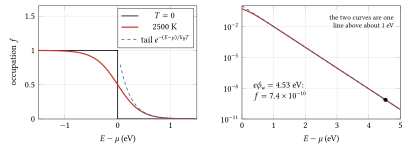
Figure 2.6. Left: the Fermi–Dirac occupation \(f\) against the energy above the Fermi level, at zero temperature (a step) and at 2500 K, where \(k_BT = 0.2154\) eV. The edge is smeared over a few \(k_BT\), and above it the occupation follows the Boltzmann tail (dashed). Right: the same on a logarithmic scale. Above about 1 eV the two curves are one line; at the work function of tungsten, 4.53 eV, the occupation is \(7.4 \times 10^{-10}\).
The work function. Measured from the Fermi level, the depth of the well is the work function \(e\phi_w\) (figure 2.7): the least energy that will take an electron out of the metal at zero temperature, since the most energetic ones already sit at the Fermi level. If the well’s wall stands \(U_0\) above its floor, then \(e\phi_w = U_0 - \mu\). Kuffel, Zaengl and Kuffel (table 5.8) give 4.74 eV for silver, 4.07 to 4.7 eV for copper and 4.35 to 4.6 eV for tungsten; the spread comes from contamination of the surface, to which the work function is very sensitive. The step at the surface acts only on motion across it. An electron escapes through a surface normal to \(z\) if
\[ \frac{p_z^2}{2m_e} > U_0 = \mu + e\phi_w , \]
whatever its momentum along the surface. For copper, with \(e\phi_w = 4.7\) eV, that needs a normal speed of \(2.03 \times 10^{6}\) m/s (\(1.98 \times 10^{6}\) m/s with 4.07 eV), more than the \(1.57 \times 10^{6}\) m/s of the fastest electrons at zero temperature. None escapes until heat lifts some into the tail.
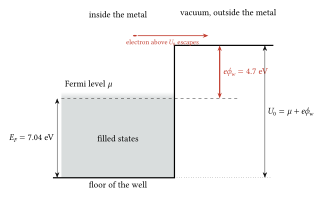
Figure 2.7. The free-electron well of copper, to scale in energy. The conduction electrons fill the states from the floor up to the Fermi level, 7.04 eV above it. The wall at the surface stands a further 4.7 eV higher, the work function; an electron needs at least \(U_0 = \mu + e\phi_w\) of energy in its motion across the surface to get out.
Current density as a flux. Let electrons of density \(n\) all move with velocity component \(v_z\) across a surface. In a time \(dt\), those within a distance \(v_z\,dt\) of the surface cross it, \(n v_z\,dt\) per unit area. Each carries charge \(e\), so the current density (A/m\(^2\)) is
\[ J = e\,n\,v_z . \]
When the velocities are spread, add up the contributions: \(J = e\int v_z\,dn\) over the electrons moving towards the surface. The weight \(v_z\) is why fast electrons count for more in a flux than in a census, as the previous two pre-requisites noted.
Numbers. A 2 kV beam of 0.1 mA in a spot 0.5 mm across has \(n = I/(e v A) = 1.2 \times 10^{14}\) electrons per m\(^3\), fewer than the \(2.5 \times 10^{19}\) gas molecules per m\(^3\) left at 0.1 Pa. Inside copper, by contrast, the electrons striking the surface from within number \(3nv_F/16 = 2.5 \times 10^{34}\) per m\(^2\) per second (half the filled sphere moves outwards, with a mean \(v_z\) of \(\tfrac34 v_F \times \tfrac12\): in a uniformly filled ball the mean speed is \(\int_0^{v_F} v\,4\pi v^2dv \big/ \tfrac43\pi v_F^3 = \tfrac34 v_F\), and over the outward half the mean of \(\cos\) of the angle to the normal, weighted by solid angle, is \(\tfrac12\); so the flux is \(\tfrac{n}{2} \times \tfrac38 v_F\)), equivalent to \(4 \times 10^{15}\) A/m\(^2\). Tungsten’s numbers are of the same order. Section 6 finds that a tungsten cathode at 2500 K emits \(2.8 \times 10^{3}\) A/m\(^2\): about one electron in \(10^{12}\) of those that reach the surface gets out.
The energies of the electrons that leave. Combine the flux weight \(v_z = p_z/m_e\) with the Boltzmann tail. The escaping electrons with normal momentum \(p_z\) are weighted by \(p_z\,e^{-p_z^2/(2m_ek_BT)}\), for \(p_z > p_0\) where \(p_0^2/2m_e = \mu + e\phi_w\). Outside, each has a normal kinetic energy \(W_z = p_z^2/2m_e - (\mu + e\phi_w)\), and since \(p_z\,dp_z = m_e\,dW_z\), the escaping flux is distributed as
\[ dJ \propto e^{-W_z/k_BT}\,dW_z, \qquad W_z \geq 0 . \]
The motion along the surface is untouched by the step, so it keeps its Gaussian, with mean energy \(\tfrac12 k_BT\) for each of the two directions. Exercise 3 shows that the mean of \(W_z\) is \(k_BT\). So the escaping electrons carry a mean energy \(k_BT + k_BT = 2k_BT\): 0.43 eV at 2500 K. These few tenths of an electronvolt are the thermal energies with which every electron in this chapter starts.
Exercises.
- Sodium gives one conduction electron per atom, with \(n = 2.65 \times 10^{28}\) m\(^{-3}\). Find its Fermi energy.
Answer
\(p_F = h(3n/8\pi)^{1/3}\) and \(E_F = p_F^2/2m_e = 3.24\) eV, less than copper’s because the electrons are less crowded (\(E_F \propto n^{2/3}\)).
- At 2500 K, how far above the Fermi level is the occupation 1 per cent? How wrong is the Boltzmann tail there?
Answer
\(1/(e^x + 1) = 0.01\) gives \(e^x = 99\), \(x = 4.60\), so \(E - \mu = 4.60 \times 0.2154 = 0.99\) eV. The tail formula gives \(e^{-4.60} = 0.0101\), 1 per cent high.
- Show that the mean normal energy of the escaping electrons, with the distribution \(e^{-W_z/k_BT}\) above, is \(k_BT\).
Answer
\(\langle W_z\rangle = \int_0^\infty W e^{-W/k_BT}dW \big/ \int_0^\infty e^{-W/k_BT}dW = (k_BT)^2/(k_BT) = k_BT\), using \(\int_0^\infty x e^{-x}dx = 1\). In a Maxwellian gas counted by number, each direction carries only \(\tfrac12 k_BT\); counted by flux across a surface, the direction across it carries \(k_BT\), because the flux favours the fast ones.
6. The hot cathode: Richardson’s law
The picture. A metal holds its conduction electrons in a potential well. At the bottom of the escape problem is the work function \(e\phi_w\): the least energy, above the most energetic electrons at zero temperature, needed to leave the surface. (We write \(\phi_w\) in volts, with a subscript, because \(\phi\) is the RF phase elsewhere in this course.) At room temperature almost no electron has it. Heat the metal and the high-energy tail of the electron distribution reaches over the barrier; the current grows extremely fast with temperature.
Thomas Edison met the effect while studying the blackening of his lamp bulbs from 1880, and in 1883 measured a current to an extra plate. He sealed the extra metal plate into a lamp and found that a galvanometer (a sensitive meter for small currents) between the plate and the filament circuit showed a current across the vacuum when the plate was on the positive side. He patented the arrangement as an “Electrical Indicator” (US patent 307,031, filed 15 November 1883, granted 21 October 1884) and did not pursue the physics (Edison 1884). Owen Richardson, at Cambridge, gave the law in a paper read on 25 November 1901, on the negative radiation from hot platinum (Richardson 1901). His first form had a different power of \(T\) in front of the exponential; the \(T^2\) form came later and was given a universal constant, computed from the Sackur–Tetrode equation (a formula of 1912 for the entropy of an ideal gas, which here describes the electron gas outside the metal), by Saul Dushman in 1923 (Dushman 1923).
Derivation. This puts together the last two pre-requisites. Treat the conduction electrons as a free gas with two spin states. The number of electrons per unit volume with momentum in \(d^3p\) is \((2/h^3) f(E)\,d^3p\), with \(f\) the Fermi occupation (Landau and Lifshitz, vol. 5, §53 and §56). An electron leaves through a surface normal to \(z\) if \(p_z^2/2m_e\) exceeds \(\mu + e\phi_w\), where \(\mu\) is the chemical potential. For those electrons \(E - \mu \geq e\phi_w \gg k_B T\) (at 2500 K, \(k_B T = 0.215\) eV), so the occupation is close to the Boltzmann tail, \(f \approx \exp[-(E - \mu)/k_B T]\). Assume every electron that reaches the surface with enough normal momentum escapes. The current density is the charge \(e\) times the flux, \(\int v_z\,dn\), with \(v_z = p_z/m_e\) and \(dn\) the number of electrons in the box \(d^3p\):
\[ J = e \int_{p_z > p_0} \frac{p_z}{m_e}\,\frac{2}{h^3}\, \exp\!\left[-\frac{p_x^2 + p_y^2 + p_z^2 - 2m_e\mu}{2 m_e k_B T}\right] d^3p, \qquad \frac{p_0^2}{2m_e} = \mu + e\phi_w . \]
The exponential of a sum is a product of exponentials, so the integral over the box splits into three, one for each component. The two transverse integrals, over \(p_x\) and \(p_y\) from \(-\infty\) to \(\infty\), are Gaussian, each \(\sqrt{2\pi m_e k_B T}\), together \(2\pi m_e k_B T\). The longitudinal one, which carries the factor \(e^{\mu/k_BT}\), is integral 2 of the special-functions pre-requisite, exact:
\[ \int_{p_0}^{\infty} \frac{p_z}{m_e}\,\exp\!\left[-\frac{p_z^2/2m_e - \mu}{k_B T}\right] dp_z = k_B T\,\exp\!\left(-\frac{e\phi_w}{k_B T}\right). \]
Putting them together, \(J = e \times (2/h^3) \times 2\pi m_e k_BT \times k_BT\,e^{-e\phi_w/k_BT}\), so
\[ J = \frac{4\pi m_e e k_B^2}{h^3}\,T^2 \exp\!\left(-\frac{e\phi_w}{k_B T}\right) \equiv A_R\,T^2 \exp\!\left(-\frac{e\phi_w}{k_B T}\right), \]
with \(A_R = 4\pi m_e e k_B^2/h^3 = 1.202 \times 10^{6}\) A m\(^{-2}\) K\(^{-2}\) = 120.2 A cm\(^{-2}\) K\(^{-2}\). Here \(J\) is in A/m\(^2\), \(T\) in kelvin.
Dushman’s 1923 constant, 60.2 A cm\(^{-2}\) K\(^{-2}\) from thermodynamics, is half of this: the factor 1.996 between them is the two spin states, not yet known to him.
Approximations and where they fail. The surface is assumed not to reflect electrons, the work function not to change with temperature, and the field at the surface to be zero. A real surface reflects some electrons, its work function varies across crystal faces, and \(\phi_w\) drifts with \(T\); all of this hides in an empirical \(A_R\), which for pure metals is usually below the theoretical value (Kuffel, Zaengl and Kuffel, section 5.3.3, which writes the effective constant as \(A(1 - R)\) with \(R\) the reflection coefficient). A strong field at the surface lowers the barrier (the Schottky effect) and raises the current slowly with voltage, so a “saturated” cathode is never quite flat. These are taken up in chapter 7.
Numbers: tungsten at 2500 K. Dushman’s fit for tungsten is \(\phi_w = 4.53\) V with \(A_R = 60.2\) A cm\(^{-2}\) K\(^{-2}\); a modern table gives 4.54 V and 60 (SIMION reference), and the accelerator handbook about 4.5 eV for tungsten and about 60 A cm\(^{-2}\) K\(^{-2}\) for metals (Chao et al., section 7.1.1.1). At 2500 K, \(e\phi_w/k_B T = 21.0\) and \(\exp(-21.0) = 7.4 \times 10^{-10}\), so
\[ J = 0.602 \times 10^{6} \times (2500)^2 \times 7.38 \times 10^{-10} = 2.78 \times 10^{3}\ \mathrm{A/m^2} = 0.278\ \mathrm{A/cm^2}. \]
From half a square millimetre of hot wire that is 1.39 mA. With 4.54 V it is 1.32 mA; with the theoretical \(A_R\) it would be 2.77 mA.
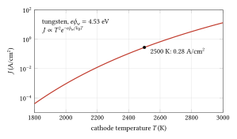
Figure 2.8. The current density from a tungsten cathode against its temperature, from the Richardson–Dushman law with Dushman’s constants. The scale on the left is logarithmic: each step is a factor of 100. Between 1800 K and 3000 K the current rises nearly a million times, which is why a cathode’s temperature must be held so steady.
| \(T\) (K) | \(J\) (A/cm\(^2\)) | current from 0.5 mm\(^2\) |
|---|---|---|
| 2000 | \(9.3 \times 10^{-4}\) | 4.6 μA |
| 2200 | 0.012 | 61 μA |
| 2400 | 0.107 | 0.53 mA |
| 2500 | 0.278 | 1.39 mA |
| 2600 | 0.674 | 3.4 mA |
| 2700 | 1.54 | 7.7 mA |
The logarithmic slope is \(d\ln J/d\ln T = 2 + e\phi_w/k_B T = 23\) at 2500 K. A 1 per cent change in temperature changes the current by 26 per cent (the slope alone gives 23 per cent; the rest is the curvature of the exponential); 100 K, from 2400 to 2500 K, changes it by a factor of 2.6. This is why the heater supply must be steady, and why emission is controlled in practice by the space charge or the grid rather than by the temperature.
Filament colour. A body begins to glow dull red near 798 K, the Draper point (John William Draper, 1847). Workshop tables for steel put cherry red near 1100 to 1150 K, orange near 1250 to 1370 K, and yellow to white above about 1400 to 1600 K; they are rough, since the eye’s judgement depends on the room’s light. A tungsten cathode at 2500 K looks white; tungsten melts at 3695 K. It became workable as fine wire only by about 1910, when William Coolidge at General Electric made it ductile; lamps with it went on sale in 1911.
Pre-requisite: Laplace and Poisson equations, uniqueness, boundary-value problems
Pre-requisite. This section gives you Poisson’s equation in one dimension, with the sign for a cloud of electrons, the conditions at the electrodes that fix its solution, and the empty gap (Laplace’s equation) to compare with. Section 7 solves it for a gap full of electrons on their way to the anode. Taught from Landau and Lifshitz, vol. 2, §36, and Tong, Electromagnetism, sections 2.1.4 and 2.4.2.
From Gauss’s law to Poisson’s equation. Take a gap between two large flat electrodes, so that everything depends only on the distance \(x\) across it. Let \(\rho(x)\) be the charge density (C/m\(^3\)) and \(\mathcal{E}(x)\) the field along \(x\) (V/m). Apply Gauss’s law to a thin slab between \(x\) and \(x + dx\), of area \(A\). Flux leaves through the face at \(x + dx\) and enters through the face at \(x\), so the net flux out is \([\mathcal{E}(x+dx) - \mathcal{E}(x)]A\), and the charge inside is \(\rho A\,dx\):
\[ \frac{d\mathcal{E}}{dx} = \frac{\rho}{\varepsilon_0} . \]
With \(\mathcal{E} = -dV/dx\), where \(V\) is the potential in volts (the field points downhill in potential, F4, section 5),
\[ \frac{d^2V}{dx^2} = -\frac{\rho}{\varepsilon_0} . \]
This is Poisson’s equation in one dimension. In three it reads \(\nabla^2 V = -\rho/\varepsilon_0\), with \(\nabla^2\) the Laplacian, \(\partial^2/\partial x^2 + \partial^2/\partial y^2 + \partial^2/\partial z^2\) (F2, section 12; Landau and Lifshitz, vol. 2, §36).
The sign for electrons. For a cloud of electrons of number density \(n\) (m\(^{-3}\)), \(\rho = -en\), so
\[ \frac{d^2V}{dx^2} = +\frac{e\,n}{\varepsilon_0} > 0 . \]
The potential curves upwards: it sags below the straight line joining its values at the two electrodes. Negative charge lowers the potential around it, and the more charge, the deeper the sag.
Laplace’s equation: the empty gap. With no charge, \(d^2V/dx^2 = 0\), Laplace’s equation. Its solutions are straight lines, \(V = a + bx\). With the cathode at \(x = 0\) held at \(V = 0\) and the anode at \(x = d\) held at \(V_a\),
\[ V(x) = V_a\,\frac{x}{d}, \qquad \mathcal{E} = -\frac{V_a}{d}, \]
the uniform field of a parallel-plate gap (the field points from anode to cathode, so its \(x\)-component is negative; an electron is pushed towards the anode).
Boundary conditions and uniqueness. A second-order equation has two constants of integration, so two conditions fix its solution. They may give the potential at a boundary (an electrode held at a voltage) or its slope, the field (for example, zero field at a surface). For the empty gap the two voltages did it.
Why is the solution then the only one? Suppose \(V_1\) and \(V_2\) both satisfy Poisson’s equation with the same \(\rho\) and the same values at both electrodes. Their difference \(U = V_1 - V_2\) satisfies \(U'' = 0\) with \(U(0) = U(d) = 0\), so \(U\) is a straight line through two zeros: \(U = 0\) everywhere. The same holds in three dimensions (Tong, section 2.4.2): fix the potential on every conductor and the charge in between, and the field everywhere is fixed. This is what allows a physicist to guess a solution, check it, and know it is the answer.
A gap with a given charge. Suppose the electrons had a uniform density \(n\), so that \(V'' = \kappa\) with \(\kappa = en/\varepsilon_0\) constant (V/m\(^2\)). Integrating twice and fitting \(V(0) = 0\) and \(V(d) = V_a\) gives
\[ V(x) = V_a\,\frac{x}{d} - \frac{\kappa}{2}\,x\,(d - x) . \]
Check: the second term vanishes at both electrodes, and its second derivative is \(\kappa\). At mid-gap the potential is lowered by \(\kappa d^2/8\). The field at the cathode is \(V'(0) = V_a/d - \kappa d/2\): the charge weakens the field that pulls electrons off the cathode, and it vanishes when \(\kappa = 2V_a/d^2\). That is the idea of the space-charge limit in section 7.
Numbers. In section 7’s diode (\(d = 5\) mm, \(V_a = 1\) kV) the limiting current density is \(2.95 \times 10^{3}\) A/m\(^2\). At the anode the electrons move at \(1.88 \times 10^{7}\) m/s, so their density there is \(n = J/(ev) = 9.8 \times 10^{14}\) m\(^{-3}\), and \(\kappa = 1.8 \times 10^{7}\) V/m\(^2\). If that density filled the gap, the mid-gap potential would sag by 56 V. Near the cathode the electrons are slow and therefore denser, which is why the real sag is larger.
When the charge depends on the potential. In a real diode, \(n\) is not given. An electron’s speed depends on the potential it has fallen through, and its density on its speed, since \(J = env\) is the same at every \(x\). So \(\rho\) depends on \(V\), the equation becomes nonlinear, and the current density \(J\) is a further unknown. Then three conditions are needed: \(V(0) = 0\), \(V(d) = V_a\), and \(V'(0) = 0\) (no field at the cathode, the space-charge limit). Two fix the solution of the second-order equation; the third fixes \(J\). The next pre-requisite gives the methods to solve it.
Exercises.
- In the uniform-density model, what density \(n\) makes the field at the cathode vanish, for \(d = 5\) mm and \(V_a = 1\) kV?
Answer
\(\kappa = 2V_a/d^2 = 8 \times 10^{7}\) V/m\(^2\), so \(n = \varepsilon_0\kappa/e = 4.4 \times 10^{15}\) m\(^{-3}\).
- Show that \(V = V_a(x/d)^{4/3}\), the Child–Langmuir potential, satisfies the three conditions above and has \(V''\) proportional to \(V^{-1/2}\).
Answer
\(V(0) = 0\) and \(V(d) = V_a\). \(V' = \tfrac43 V_a x^{1/3}/d^{4/3}\), which is 0 at \(x = 0\). \(V'' = \tfrac49 V_a x^{-2/3}/d^{4/3}\), and \(V^{-1/2} = V_a^{-1/2}(x/d)^{-2/3}\), so \(V''/V^{-1/2} = \tfrac49 V_a^{3/2}/d^2\), a constant.
- In the space-charge-limited diode the field at the anode is \(4V_a/(3d)\) and at the cathode zero. Using \(d\mathcal{E}/dx = \rho/\varepsilon_0\), find the total charge per unit area of electrons in the gap for \(d = 5\) mm and \(V_a = 1\) kV.
Answer
Integrating across the gap, the change of field is the total charge per area over \(\varepsilon_0\): \(|\sigma| = \varepsilon_0 \times 4V_a/(3d) = 8.854 \times 10^{-12} \times 2.67 \times 10^{5} = 2.4 \times 10^{-6}\) C/m\(^2\). That charge in transit is what holds the current down.
Pre-requisite: Ordinary differential equations (linear, constant and varying coefficients)
Pre-requisite. This section gives you the methods for the equations of sections 7 and 9: a first integral for a second-order equation whose right side depends only on the unknown, separation of variables, changing the independent variable from time to distance along the beam, and the linear equation \(r'' = -K(z)\,r\) with its thin-lens limit. Section 7 uses the first two for the Child–Langmuir law, section 9 the last two for the magnetic lens. Taught from Landau and Lifshitz, vol. 1, §11 (motion in one dimension), and Wangler, sections 7.7 and 7.16.
Words. F1, section 10 met the first differential equations; here are the names and three more methods. An ordinary differential equation relates an unknown function of one variable to its derivatives. Its order is that of the highest derivative. It is linear if the unknown and its derivatives appear only to the first power and are never multiplied together: \(y'' + K y = 0\) is linear, \(V'' = C\,V^{-1/2}\) is not. A linear equation has constant coefficients if, like \(K\) here, they do not depend on the variable, and varying coefficients if they do, as \(K(z)\). A second-order equation needs two conditions to fix its solution.
A first integral: \(x'' = F(x)\). When the second derivative depends only on the unknown itself, multiply both sides by \(2x'\). The left side becomes \(2x'x'' = (x'^2)'\), by the chain rule (F1, section 2). The right side becomes \(2F(x)\,x' = \frac{d}{dt}\,2G(x)\), where \(G\) is any antiderivative of \(F\). Both sides are now derivatives, so
\[ x'^2 = 2G(x) + \text{constant} . \]
The second order has dropped to the first. In mechanics, with \(m x'' = F(x)\), this is energy conservation: \(\tfrac12 m x'^2 - \int F\,dx\) stays constant (Landau and Lifshitz, vol. 1, §11). For the diode of section 7, \(V'' = C\,V^{-1/2}\) with \(C\) a constant: \(G = 2C\,V^{1/2}\), so \(V'^2 = 4C\,V^{1/2} + c_1\), and the condition \(V' = 0\) where \(V = 0\) makes \(c_1 = 0\).
Separation of variables. A first-order equation \(dx/dt = g(x)\) can be rearranged to put each variable on its own side, \(dx/g(x) = dt\), and both sides integrated. Landau and Lifshitz (vol. 1, §11) find the time of a one-dimensional motion this way, \(t = \int dx/\sqrt{2[E - U(x)]/m}\). For the diode, \(dV/dx = 2\sqrt{C}\,V^{1/4}\) gives \(V^{-1/4}\,dV = 2\sqrt C\,dx\), so \(\tfrac43 V^{3/4} = 2\sqrt C\,x\), with the constant zero because \(V = 0\) at \(x = 0\).
Worked example: the transit time of a diode. Section 7 states that electrons take \(3d/v_f\) to cross a space-charge-limited gap, against \(2d/v_f\) for an empty one, with \(v_f\) their final speed. Prove it by separation. In the space-charge-limited gap \(V = V_a(x/d)^{4/3}\), and an electron starting at rest has \(v = \sqrt{2eV/m_e} = v_f\,(x/d)^{2/3}\). With \(dt = dx/v\),
\[ t = \int_0^d \frac{dx}{v_f\,(x/d)^{2/3}} = \frac{d^{2/3}}{v_f}\Big[3x^{1/3}\Big]_0^d = \frac{3d}{v_f} . \]
In the empty gap \(V = V_a x/d\), so \(v = v_f(x/d)^{1/2}\), and the same steps give \(2d/v_f\). The space charge keeps the electrons slow for longer near the cathode. For \(d = 5\) mm and 1 kV, \(v_f = 1.88 \times 10^{7}\) m/s, and the times are 0.80 ns and 0.53 ns.
Changing the independent variable. For a beam we care less about where an electron is at a given time than about its path: its distance \(r\) from the axis as a function of distance \(z\) along the axis. If the forward speed \(v\) is constant, \(dz = v\,dt\), so \(d/dt = v\,d/dz\) and
\[ \frac{d^2 r}{dt^2} = v^2\,\frac{d^2 r}{dz^2} . \]
Write \(r' = dr/dz\) for the slope of the path, in radians for small angles. Example: between deflecting plates, \(\ddot y = |q|\mathcal{E}/m\) becomes \(y'' = |q|\mathcal{E}/(mv^2) = \mathcal{E}/(2V_a)\), using \(mv^2 = 2|q|V_a\). The path is a parabola in \(z\). For \(\mathcal{E} = 20\) kV/m and \(V_a = 2\) kV, \(y'' = 5\) m\(^{-1}\), and after 2 cm, \(y = \tfrac12 \times 5 \times 0.02^2 = 1\) mm. (If the speed changes along the path, \(v\) must be kept inside the derivatives; chapter 7 does this.)
The linear equation \(r'' = -K r\). With \(K > 0\) constant (units m\(^{-2}\)) this is the equation of a harmonic oscillator (F3, section 9), with distance \(z\) in place of time and \(\sqrt K\) in place of the angular frequency. Its solutions are
\[ r(z) = r_0\cos(\sqrt K z) + \frac{r_0'}{\sqrt K}\sin(\sqrt K z), \]
where \(r_0\) and \(r_0'\) are the position and slope at \(z = 0\); substituting confirms both the equation and the starting values. The ray oscillates about the axis: the force pulls it back in proportion to its distance, which is focusing. (With \(K < 0\) the cosine and sine become the hyperbolic functions \(\cosh u = (e^u + e^{-u})/2\) and \(\sinh u = (e^u - e^{-u})/2\), with \(u = \sqrt{|K|}\,z\), which grow exponentially, and the ray runs away: defocusing.)
Varying \(K\) and the thin lens. When \(K\) depends on \(z\) there is usually no closed form, and one solves step by step on a computer (F1, section 11). But suppose \(K\) is non-zero only over a short length, and \(r\) hardly changes there. Integrate the equation once across the region:
\[ r'_{out} - r'_{in} = -\int K\,r\,dz \approx -r\int K\,dz . \]
The ray keeps its position and has its slope changed in proportion to its distance from the axis. That is what a thin lens does in optics: a ray at height \(r\) is bent by \(-r/f\), so that rays arriving parallel to the axis cross it a distance \(f\) further on. So
\[ \frac{1}{f} = \int K\,dz , \]
valid when the lens is short compared with \(f\), that is, \(\sqrt K L \ll 1\) for a lens of length \(L\) (Wangler, section 7.7, writes the same as a transfer matrix).
Numbers: how good is the thin lens? Section 9 shows that a solenoid’s field \(B_z\) gives \(K = [B_z/(2B\rho)]^2\), with \(B\rho\) the beam’s rigidity (Wangler, section 7.16). Take a uniform 4.5 mT over \(L = 30\) mm and 4 kV electrons, \(B\rho = 2.14 \times 10^{-4}\) T m. Then \(\sqrt K = 10.5\) m\(^{-1}\), \(K = 111\) m\(^{-2}\) and \(\sqrt K L = 0.32\). The thin-lens formula gives \(1/f = KL = 3.33\) m\(^{-1}\), \(f = 0.301\) m. The exact solution for constant \(K\) turns a ray entering parallel at height \(r_0\) into one leaving with slope \(-r_0\sqrt K\sin(\sqrt K L)\), so \(1/f = \sqrt K\sin(\sqrt K L) = 3.27\) m\(^{-1}\), \(f = 0.306\) m. The thin lens is 1.7 per cent too strong.
Exercises.
- Use the first integral to solve \(V'' = \kappa\) (constant) with \(V(0) = 0\) and \(V'(0) = 0\). Check by integrating directly.
Answer
\(G = \kappa V\), so \(V'^2 = 2\kappa V\) (the constant is zero). Then \(dV/\sqrt{V} = \sqrt{2\kappa}\,dx\), so \(2\sqrt V = \sqrt{2\kappa}\,x\) and \(V = \kappa x^2/2\). Integrating \(V'' = \kappa\) twice with both conditions gives the same.
- Find the transit time of the space-charge-limited diode with \(d = 5\) mm at 300 V.
Answer
\(v_f = \sqrt{2e \times 300/m_e} = 1.03 \times 10^{7}\) m/s, so \(3d/v_f = 1.46\) ns.
- For a lens of constant \(K\) and length \(L\), how large may \(u = \sqrt K L\) be before the thin-lens \(1/f\) is 10 per cent too strong?
Answer
The ratio of thin to exact is \(KL/(\sqrt K \sin u) = u/\sin u\). Setting \(u/\sin u = 1.1\) gives \(u = 0.75\). For the example above that would be a lens 71 mm long.
7. Space charge: the Child–Langmuir law
The picture. A hot cathode can offer more electrons than the anode can draw away. The electrons that have left but not yet arrived form a cloud of negative charge in front of the cathode. That cloud pushes back on the next electrons. The current rises until the cloud’s own field just cancels the applied field at the cathode surface, and no further. The limit is set by geometry and voltage, not by the cathode.
Derivation (planar diode). Take an infinite flat cathode at \(x = 0\), potential 0, and a flat anode at \(x = d\), potential \(V_a\). Electrons leave the cathode at rest and flow steadily with current density \(J\) (magnitude, A/m\(^2\)). Let \(V(x)\) be the potential, \(n(x)\) the electron density, \(v(x)\) their speed. Three equations hold:
\[ \begin{aligned} \frac{d^2V}{dx^2} &= \frac{e\,n}{\varepsilon_0} &&\text{(Poisson, electrons are negative charge)}\\ J &= e\,n\,v &&\text{(steady flow: the same current at every } x\text{)}\\ \tfrac{1}{2}m_e v^2 &= eV &&\text{(energy)} \end{aligned} \]
Eliminate \(n\) and \(v\): the energy equation gives \(v = \sqrt{2eV/m_e}\), so \(n = J/(ev) = (J/e)\sqrt{m_e/(2eV)}\), and Poisson’s equation becomes
\[ \frac{d^2V}{dx^2} = \frac{J}{\varepsilon_0}\sqrt{\frac{m_e}{2e}}\;V^{-1/2} . \]
This is the equation \(V'' = C\,V^{-1/2}\) of the ODE pre-requisite, with \(C = (J/\varepsilon_0)\sqrt{m_e/2e}\). Multiply both sides by \(2\,dV/dx\) and integrate from the cathode (the first integral, with \(G = 2C\,V^{1/2}\)). The space-charge limit is the condition that the field at the cathode is zero, \(V'(0) = 0\), with \(V(0) = 0\):
\[ \left(\frac{dV}{dx}\right)^2 = \frac{4J}{\varepsilon_0}\sqrt{\frac{m_e}{2e}}\;V^{1/2} . \]
Take the square root, separate, and integrate again:
\[ V^{-1/4}\,dV = \left(\frac{4J}{\varepsilon_0}\right)^{1/2}\left(\frac{m_e}{2e}\right)^{1/4} dx \quad\Longrightarrow\quad \frac{4}{3}V^{3/4} = \left(\frac{4J}{\varepsilon_0}\right)^{1/2}\left(\frac{m_e}{2e}\right)^{1/4} x . \]
At \(x = d\), \(V = V_a\). Solve for \(J\): square both sides, \(\tfrac{16}{9}V_a^{3/2} = (4J/\varepsilon_0)(m_e/2e)^{1/2}d^2\), so
\[ J = \frac{4}{9}\,\varepsilon_0\sqrt{\frac{2e}{m_e}}\;\frac{V_a^{3/2}}{d^2} = 2.334 \times 10^{-6}\,\frac{V_a^{3/2}}{d^2}\ \ \mathrm{A/m^2} \qquad (V_a\ \text{in V},\ d\ \text{in m}). \]
Three by-products are worth having. The potential follows \(V(x) = V_a (x/d)^{4/3}\) instead of the straight line of an empty gap. The field at the anode is \(4V_a/3d\), a third more than in vacuum. And the transit time is \(3d/v_f\), where \(v_f\) is the final speed, compared with \(2d/v_f\) for an empty gap.
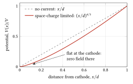
Figure 2.9. The potential across a flat gap. With no current it rises in a straight line. When the current is limited by space charge, the cloud of electrons near the cathode pulls the potential down to \(V_a(x/d)^{4/3}\), which starts flat: the field at the cathode is zero, so the cathode cannot be made to give more.
C. D. Child derived the three-halves law in 1911, in a paper on the discharge from hot lime (Child 1911). Irving Langmuir, at General Electric in Schenectady, derived it again for electrons in 1913, in a study of how space charge and residual gas limit the current from a hot cathode in high vacuum (Langmuir 1913). Langmuir later added the electrons’ initial thermal speeds, which make a small potential minimum just in front of the cathode (Langmuir 1923). For heavier particles the law carries \(\sqrt{q/m}\): at the same voltage and gap, protons give \(\sqrt{1836} \approx 43\) times less current density than electrons (Humphries 1990).
Perveance. For any diode geometry, scaling arguments give \(I = K V_a^{3/2}\). Suppose the current is space-charge-limited at a voltage \(V_a\), and multiply every potential by a factor \(s\). Poisson’s equation is still satisfied if the charge density everywhere is also multiplied by \(s\), since \(\nabla^2 V\) scales with \(V\). The electrons’ speeds, from \(\tfrac12 m_ev^2 = eV\), grow by \(\sqrt s\). The current density \(J = \rho v\) therefore grows by \(s \times \sqrt s = s^{3/2}\), whatever the shape of the electrodes. So \(I = K V_a^{3/2}\) with a constant \(K\) called the perveance, in A/V\(^{3/2}\) (often quoted in microperveance, \(10^{-6}\) A/V\(^{3/2}\)). For the planar diode, \(K = 2.334 \times 10^{-6} A_c/d^2\) with \(A_c\) the cathode area. Perveance measures how strongly space charge matters in a beam, a theme of chapter 22.
Emission-limited or space-charge-limited. The current is whichever limit is lower: the cathode’s offer, \(J_{RD} A_c\), or the space-charge limit, \(K V_a^{3/2}\). At low voltage the diode is space-charge-limited and \(I \propto V_a^{3/2}\); heating the cathode further changes nothing. At high voltage it is emission-limited (or temperature-limited) and \(I\) is flat in \(V_a\) but very steep in \(T\). The knee is where they meet (figure 2.10):
\[ V_{knee} = \left(\frac{J_{RD}\,d^2}{2.334 \times 10^{-6}}\right)^{2/3} . \]
Numbers. Take a flat cathode of 0.5 mm\(^2\) at 2500 K (0.278 A/cm\(^2\), 1.39 mA) facing an anode 5 mm away. The planar perveance is \(4.67 \times 10^{-8}\) A/V\(^{3/2}\) (0.047 microperveance). At 300 V the space-charge limit is 0.24 mA; at 500 V, 0.52 mA; at 1 kV, 1.48 mA. The knee is at 960 V. Below it the current follows the voltage; above it, the temperature. A real hairpin filament is not a plane, so treat these as a guide to the order of magnitude.
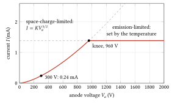
Figure 2.10. The current of the planar diode above: a cathode of 0.5 mm\(^2\) at 2500 K, offering 1.39 mA, facing an anode 5 mm away. Below 960 V the space charge holds the current to \(KV_a^{3/2}\), whatever the temperature; above it the cathode cannot supply more, and the current is set by the temperature. A real diode rounds the corner. For comparison, a modern teaching tube draws about 0.1 mA at 4 kV (3B Scientific), an effective \(I/V^{3/2}\) of \(4 \times 10^{-10}\) A/V\(^{3/2}\): the gun’s grid and small anode hole, not the cathode, decide its current.
Assumptions: one dimension, steady state, zero initial velocity, non-relativistic motion. Humphries plots the electron law only up to 100 kV and adds relativistic corrections above that; the relativistic version is in Humphries 1990, section 6.5.
8. The simplest electron gun
The picture. A gun has three parts. The cathode supplies electrons. A cup around it, the Wehnelt cylinder (Arthur Wehnelt, 1902 to 1903), held some tens of volts negative of the cathode, pushes the electrons inward and lets only those from the centre of the cathode through; making it more negative cuts the beam off entirely. The anode, a plate with a small hole at the full positive potential, accelerates them. The field between the curved Wehnelt and the anode acts as a lens, bending each electron towards the axis by an amount that grows with its distance from it, as a glass lens bends light (section 9 makes this exact). The electrons therefore cross the axis and each other in a small waist, the crossover, a short distance in front of the cathode, and the rest of the tube images that crossover onto the screen as the spot (figure 2.11).
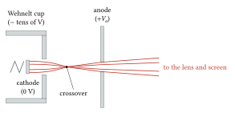
Figure 2.11. The simplest gun in cross-section, not to scale. The Wehnelt cup, a few tens of volts negative of the cathode, pushes the electrons from the centre of the cathode towards the axis; they cross over in a small waist and diverge through the hole in the anode. The rest of the tube focuses that crossover onto the screen.
The Wehnelt is the brightness control. In the wartime tubes measured at the MIT Radiation Laboratory, the beam current rose roughly as the cube of the grid voltage (the bias, the Wehnelt’s potential relative to the cathode) measured from the cutoff voltage at which the spot just vanishes, and the cutoff voltage grew roughly linearly with the anode voltage; one gun is shown working at a grid bias of \(-80\) V (Soller, Starr and Valley 1948, chapter 2). Because the grid controls the current, the cathode can be run hot enough to be in the space-charge-limited regime, where small changes of temperature do not show on the screen.
After the anode hole the electrons have their full energy \(|q|V_a\), given by section 1. The hole itself is a weak lens, because the field is strong on one side of it and weak on the other.
Pre-requisite: Biot-Savart and Ampere’s law
Pre-requisite. This section gives you the magnetic field on the axis of a circular coil from the Biot–Savart law, the coil’s central field in terms of its ampere-turns, and the integral of the field along the axis, which Ampère’s law gives at once. Section 9 uses them to find the focal length of a coil lens. Taught from Landau and Lifshitz, vol. 2, §43, and Tong, Electromagnetism, sections 3.1 and 3.2.3.
The Biot–Savart law. A steady current makes a magnetic field (F4, section 11). Each short piece \(d\mathbf{l}\) of a wire carrying current \(I\) (A) contributes, at a point a distance \(R\) away,
\[ d\mathbf{B} = \frac{\mu_0}{4\pi}\,\frac{I\,d\mathbf{l}\times\hat{\mathbf{R}}}{R^2}, \]
where \(\hat{\mathbf{R}}\) is the unit vector from the piece of wire to the point, and \(\mu_0 = 1.2566 \times 10^{-6}\) T m/A. The contribution is proportional to the current, falls as \(1/R^2\), and stands at right angles both to the wire and to the line joining them. The field of a whole circuit is the sum of these pieces. Landau and Lifshitz (§43) derive the law from the equations of a steady field, \(\nabla\cdot\mathbf{B} = 0\) and \(\nabla\times\mathbf{B} = \mu_0\mathbf{j}\); Tong (section 3.2.3) does the same.
On the axis of a circular loop. Take a loop of radius \(a\) (m) in the plane \(z = 0\), centred on the \(z\)-axis, and a point on the axis at height \(z\). Every piece of the loop is the same distance \(R = \sqrt{a^2 + z^2}\) from the point, and every piece is at right angles to the line joining them, so each contributes a field of size
\[ |d\mathbf{B}| = \frac{\mu_0 I\,dl}{4\pi\,(a^2 + z^2)} . \]
These contributions point in different directions, tilted away from the axis. Pieces on opposite sides of the loop tilt opposite ways, so the parts across the axis cancel in pairs. What survives is the part along the axis, a fraction \(a/R\) of each, by the geometry of the right triangle formed by the radius, the axis and the line \(R\). Summing round the circumference \(2\pi a\):
\[ B_z(z) = \frac{\mu_0 I}{4\pi(a^2+z^2)}\cdot\frac{a}{\sqrt{a^2+z^2}}\cdot 2\pi a = \frac{\mu_0 I a^2}{2\,(a^2+z^2)^{3/2}} . \]
A coil of \(N\) turns wound close together acts as one loop carrying \(NI\), the ampere-turns. Only the product matters: 181 turns at 1 A or one turn at 181 A give the same field. So
\[ B_z(z) = \frac{\mu_0 N I\,a^2}{2\,(a^2+z^2)^{3/2}}, \qquad B_z(0) = \frac{\mu_0 N I}{2a} . \]
At \(z = a\) the field has fallen to \(2^{-3/2} = 0.354\) of its central value, and far away it falls as \(1/z^3\), the field of a magnetic dipole (a small current loop, the magnetic counterpart of the electric dipole of F4, section 3, whose field also falls as \(1/r^3\)). Figure 2.12 plots it for the lens coil of section 9.
The integral along the axis. With the companion integral \(\int dz/(a^2+z^2)^{3/2} = 2/a^2\) from the pre-requisite before section 6,
\[ \int_{-\infty}^{\infty} B_z\,dz = \frac{\mu_0 N I a^2}{2}\cdot\frac{2}{a^2} = \mu_0 N I , \]
independent of the radius. A small coil has a strong, short field; a large one a weak, long field; the integral is the same.
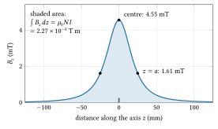
Figure 2.12. The field on the axis of the lens coil of section 9: one loop of radius 25 mm (its position marked at \(z = 0\)) carrying 181 ampere-turns. The field is 4.55 mT at the centre and has fallen to 0.354 of that one radius away. The shaded area is \(\int B_z\,dz = \mu_0 NI = 2.27 \times 10^{-4}\) T m, the same for a coil of any radius.
Ampère’s law says the same at once. For steady currents the integral of \(\mathbf{B}\) around any closed path equals \(\mu_0\) times the current threading it:
\[ \oint \mathbf{B}\cdot d\mathbf{l} = \mu_0 I_{enc} \]
(Tong, section 3.1; F4, section 12). Take a path along the axis from \(-\infty\) to \(+\infty\), closed by a huge semicircle. On the semicircle the field falls as \(1/R^3\) while its length grows only as \(R\), so it contributes nothing. The path threads the coil once, so \(\int B_z\,dz = \mu_0 NI\), whatever the coil’s shape. The same law gives the field inside a long solenoid with \(n\) turns per metre: a rectangular path with one side inside and one far outside encloses \(nI\) per metre of length, so \(B = \mu_0 n I\). For 1000 turns per metre at 1 A that is 1.26 mT.
Numbers: the lens coil of section 9. A coil of radius 25 mm with 181 ampere-turns has a central field of \(\mu_0 \times 181/(2 \times 0.025) = 4.55\) mT, about 90 times the Earth’s field, and \(\int B_z\,dz = 2.27 \times 10^{-4}\) T m. With the integral \(\int dz/(a^2+z^2)^3 = 3\pi/(8a^5)\), the square of the field integrates to
\[ \int B_z^2\,dz = \left(\frac{\mu_0 N I a^2}{2}\right)^2\frac{3\pi}{8a^5} = \frac{3\pi\mu_0^2(NI)^2}{32\,a} = 6.09 \times 10^{-7}\ \mathrm{T^2\,m}, \]
the quantity that sets the lens’s strength in section 9.
Exercises.
- Thomson’s two coils had a diameter equal to the 5 cm length of his plates and were spaced one radius apart. Two equal coils of radius \(a\) spaced \(a\) apart (a Helmholtz pair) give a central field \((4/5)^{3/2}\mu_0 NI/a\), with \(NI\) the ampere-turns of each. Derive this from the loop formula, and find the ampere-turns per coil for his 0.55 mT.
Answer
Each coil is \(a/2\) from the centre, so each gives \(\mu_0 NI a^2/[2(a^2 + a^2/4)^{3/2}] = \mu_0 NI a^2/[2 a^3 (5/4)^{3/2}]\). Two of them give \((4/5)^{3/2}\mu_0 NI/a = 0.716\,\mu_0 NI/a\). For \(a = 2.5\) cm and 0.55 mT, \(NI = 0.55 \times 10^{-3} \times 0.025/(0.716 \times 1.2566 \times 10^{-6}) = 15.3\) ampere-turns. (Along the pair’s axis the field is within 5.4 per cent of its central value out to \(a/2\) either side. Thomson’s beam crossed the coils’ axis at right angles, though, so section 4’s question of how far his field reached is about the field off the axis, which this formula does not give.)
- A Helmholtz pair of radius 0.2 m is to cancel the Earth’s 50 μT over a bench. How many ampere-turns per coil?
Answer
\(NI = 50 \times 10^{-6} \times 0.2/(0.716 \times 1.2566 \times 10^{-6}) = 11.1\) ampere-turns, for example 111 turns at 0.1 A.
- How strong is the lens coil’s field on its axis ten radii away, where a gun’s cathode might sit?
Answer
\(B_z(10a)/B_z(0) = [a^2/(a^2 + 100a^2)]^{3/2} = 101^{-3/2} = 9.9 \times 10^{-4}\), so 4.5 μT, a tenth of the Earth’s field. Small, but the pre-requisite that follows shows that any field on the cathode leaves its mark on the beam.
Pre-requisite (continued): Lagrangian and Hamiltonian mechanics, the charged-particle Hamiltonian
Pre-requisite. This section gives you the vector potential of a field with axial symmetry, the Lagrangian of a charge in a magnetic field, the canonical momentum \(\mathbf{p} + q\mathbf{A}\), and the conserved momentum that goes with a cyclic coordinate. Section 9 uses them for Busch’s theorem, the conservation of canonical angular momentum in a magnetic lens. Taught from Landau and Lifshitz, vol. 1, §14, and vol. 2, §16 and §17; and Tong, Classical Mechanics, sections 7.5.1 and 7.6.2.
Chapter 1 introduced the principle of least action, the Lagrangian \(L\), the momentum as \(\partial L/\partial \mathbf{v}\) and the energy as the Hamiltonian. Here we add a magnetic field. The principle itself is also in F3, section 12.
The vector potential. A magnetic field has no sources: as many field lines enter any closed surface as leave it, \(\nabla\cdot\mathbf{B} = 0\). Such a field can always be written as the curl of another field, the vector potential \(\mathbf{A}\) (T m): \(\mathbf{B} = \nabla\times\mathbf{A}\) (the curl measures how much a field circulates, F2, section 11; a curl always has zero divergence, so this \(\mathbf{B}\) has no sources, as it must). By Stokes’s theorem, the integral of \(\mathbf{A}\) round a closed curve equals the magnetic flux \(\Phi\) (Wb) through it:
\[ \oint \mathbf{A}\cdot d\mathbf{l} = \Phi . \]
For a field with symmetry about the \(z\)-axis, such as a coil’s, use cylindrical coordinates \((r, \theta, z)\): distance from the axis, angle round it, and distance along it (F2, section 13). Take \(\mathbf{A}\) to have only an azimuthal part \(A_\theta(r, z)\), the same all round. Round a circle of radius \(r\) about the axis the integral is then \(2\pi r A_\theta\), so
\[ A_\theta = \frac{\Phi(r, z)}{2\pi r} \approx \frac{r\,B_z(z)}{2} \quad\text{near the axis}, \]
using \(\Phi \approx \pi r^2 B_z\) when the field hardly changes across a small disc.
The same symmetry gives the radial field near the axis, which section 9’s picture relies on. Take a small cylinder of radius \(r\) from \(z\) to \(z + dz\). The flux entering one end and leaving the other differs by \(\pi r^2\,(dB_z/dz)\,dz\), and since no flux is created, the side must carry the difference: \(2\pi r\,dz\,B_r = -\pi r^2\,(dB_z/dz)\,dz\), so
\[ B_r \approx -\frac{r}{2}\,\frac{dB_z}{dz} . \]
Where the field rises along \(z\), the field lines converge and \(B_r\) points inwards; where it falls, outwards.
The Lagrangian of a charge in a field. In SI units, for a charge \(q\) of mass \(m\) in a scalar potential \(\varphi\) and a vector potential \(\mathbf{A}\),
\[ L = -mc^2\sqrt{1 - v^2/c^2} + q\,\mathbf{A}\cdot\mathbf{v} - q\varphi , \]
which at low speed becomes \(\tfrac12 mv^2 + q\mathbf{A}\cdot\mathbf{v} - q\varphi\) (Landau and Lifshitz, vol. 2, §16, in Gaussian units, where \(q\mathbf{A}\) reads \(e\mathbf{A}/c\)). The first term is the free particle’s; the other two couple it to the field. Lagrange’s equations with this \(L\) give exactly the Lorentz force (vol. 2, §17; Tong, section 7.6.2). Below we check this in the case we need.
Canonical momentum. The momentum conjugate to a coordinate is the derivative of \(L\) with respect to that coordinate’s rate of change. For position it is
\[ \mathbf{P} = \frac{\partial L}{\partial\mathbf{v}} = \gamma m\mathbf{v} + q\mathbf{A} = \mathbf{p} + q\mathbf{A} . \]
\(\mathbf{P}\), the canonical momentum, is not the ordinary momentum \(\mathbf{p} = \gamma m\mathbf{v}\). It includes a share belonging to the field.
Cyclic coordinates. Lagrange’s equation for a coordinate \(q_i\) reads \(\frac{d}{dt}(\partial L/\partial\dot q_i) = \partial L/\partial q_i\). If \(L\) does not contain \(q_i\) itself, only its rate \(\dot q_i\), the coordinate is called cyclic, the right side is zero, and the conjugate momentum \(\partial L/\partial\dot q_i\) stays constant (Landau and Lifshitz, vol. 1, §14). A symmetry of the system gives a conserved quantity, the simplest case of Noether’s theorem (Tong, section 7.5.1).
The azimuth is cyclic in an axially symmetric field. The azimuth is the angle \(\theta\) round the axis. In cylindrical coordinates the velocity has three parts at right angles, \(\dot r\) outwards, \(r\dot\theta\) round the axis and \(\dot z\) along it, so \(v^2 = \dot r^2 + r^2\dot\theta^2 + \dot z^2\) and \(\mathbf{A}\cdot\mathbf{v} = A_\theta\,r\dot\theta\). If the fields are the same at every \(\theta\), \(L\) contains \(\dot\theta\) but not \(\theta\). So
\[ P_\theta = \frac{\partial L}{\partial\dot\theta} = \gamma m r^2\dot\theta + q\,r A_\theta = \gamma m r^2\dot\theta + \frac{q\,\Phi}{2\pi} = \text{constant}. \]
The first term comes from \(\partial\sqrt{1 - v^2/c^2}/\partial\dot\theta = -\gamma r^2\dot\theta/c^2\), and it is the ordinary angular momentum about the axis (F3, section 7): momentum \(\gamma m r\dot\theta\) round the axis times the lever arm \(r\). So as an electron moves into a region where the flux enclosed by its circle about the axis is larger, its ordinary angular momentum must change by \(-q\,\Delta\Phi/2\pi\). Near the axis, with \(rA_\theta = r^2B_z/2\), this is the form section 9 uses.
Check: it is the Lorentz force. Differentiate in time the statement that \(P_\theta\) is constant, writing \(rA_\theta = \Phi/2\pi\):
\[ \frac{d}{dt}(\gamma m r^2\dot\theta) = -\frac{q}{2\pi}\left(\frac{\partial\Phi}{\partial r}\dot r + \frac{\partial\Phi}{\partial z}\dot z\right). \]
Widening the circle by \(dr\) adds the flux through a thin ring, \(\partial\Phi/\partial r = 2\pi r B_z\). Moving it along by \(dz\) loses the flux that leaves through the side, \(\partial\Phi/\partial z = -2\pi r B_r\). So the rate of change of angular momentum is \(q\,r\,(\dot z B_r - \dot r B_z)\). That is \(r\) times the azimuthal part of \(q\mathbf{v}\times\mathbf{B}\), which in cylindrical coordinates is \(q(v_z B_r - v_r B_z)\). The torque is right.
Numbers: a cathode in a stray field. Suppose the cathode of a gun sits in a stray field of 1 mT, and an electron leaves it at rest from 0.5 mm off the axis. Its circle encloses \(\Phi = \pi r^2 B = 7.9 \times 10^{-10}\) Wb, so \(P_\theta = e\Phi/2\pi = 2.0 \times 10^{-29}\) kg m\(^2\)/s. When it reaches a region free of field at the same radius, all of that is ordinary angular momentum: \(v_\theta = P_\theta/(m_e r) = 4.4 \times 10^{4}\) m/s. That is a quarter of the thermal spread of \(1.95 \times 10^{5}\) m/s found in the pre-requisite before section 6. And no lens with axial symmetry can take it away, because every such lens conserves \(P_\theta\).
Exercises.
- An electron starts on the axis, or anywhere outside the field without rotation, so \(P_\theta = 0\). Show that inside a field \(B_z\) near the axis it turns at \(\dot\theta = -qB_z/(2\gamma m)\), and find the total angle it turns through in section 9’s lens coil (181 ampere-turns) at 4 kV.
Answer
\(P_\theta = 0\) gives \(\gamma m r^2\dot\theta = -q r^2 B_z/2\), so \(\dot\theta = -qB_z/(2\gamma m)\). With \(dt = dz/v\), the angle is \(\int qB_z\,dz/(2\gamma m v) = q\mu_0 NI/(2\gamma m v)\), using \(\int B_z\,dz = \mu_0 NI\). At 4 kV, \(\gamma = 1.0078\) and \(v = 3.73 \times 10^{7}\) m/s, so the angle is 0.532 rad, 30.5°, in magnitude.
- Find the radial field 1 mm from the axis of the lens coil (radius 25 mm, 181 ampere-turns) at \(z = a/2\), where \(dB_z/dz\) is largest.
Answer
\(dB_z/dz = -3\mu_0 NI a^2 z/[2(a^2+z^2)^{5/2}]\), which at \(z = a/2\) is \(-0.156\) T/m. Then \(B_r = -(r/2)\,dB_z/dz = 7.8 \times 10^{-5}\) T, 78 μT, pointing outwards where the field falls. Small, but crossed with the full forward speed it is what starts the rotation.
- Using \(P = p + qA\), explain why the canonical momentum of an electron in a uniform field \(B_z\) depends on where the axis is drawn, while its motion does not.
Answer
\(A_\theta = rB_z/2\) is measured from the chosen axis; another axis gives a different \(\mathbf{A}\) with the same curl, and so a different \(\mathbf{P}\). The motion depends only on \(\mathbf{B}\). \(P_\theta\) is conserved only about an axis of symmetry of the field, which is why Busch’s theorem is stated for lenses with axial symmetry, about their own axis.
9. Electron lenses
The einzel lens, in words. Three coaxial tubes or apertures: the outer two at the beam’s own potential, the middle one higher or lower. Entering, the electron meets radial field components that push it towards or away from the axis; leaving, it meets the opposite ones. The two nearly cancel, but not exactly: in a decelerating lens the electron is slow, and lingers, where the push is inward; in an accelerating one it is pulled inward while still slow. Either way the net effect converges, and the beam leaves with the energy it came with, hence unipotential or einzel (“single”) lens. The focal length depends on the ratio of the middle voltage to the beam voltage and on the electrode size; the derivation goes through the paraxial ray equation, the equation of motion for paraxial rays, those that stay close to the axis and nearly parallel to it, so that their angles are small and the fields can be taken to first order in the distance from the axis (Humphries, Principles of Charged Particle Acceleration, sections 6.2 to 6.6).
The magnetic solenoid lens. In 1926 Hans Busch showed that a short coil around the tube, whose field is symmetric about the axis, acts on electrons as a glass lens acts on light (Busch 1926).
The picture. Near the coil’s ends the field has a radial component \(B_r\). An electron entering off axis crosses it, and \(v_z B_r\) gives it an azimuthal velocity: the beam starts to rotate. Inside, that azimuthal velocity crossed with the axial field \(B_z\) gives a radial force towards the axis. Leaving, the opposite radial field takes the rotation away again. The net effect is a pull towards the axis proportional to the distance from it, which is the definition of a lens.
Derivation. Use cylindrical coordinates \((r, \theta, z)\), \(\theta\) here being the azimuth. For a static, axially symmetric field the vector potential has only an azimuthal part, \(A_\theta \approx r B_z(z)/2\) close to the axis. Symmetry in \(\theta\) conserves the canonical angular momentum (Landau and Lifshitz, vol. 2, §16; vol. 1, §14):
\[ P_\theta = \gamma m r^2\dot\theta + q r A_\theta = \gamma m r^2 \dot\theta + \frac{q r^2 B_z}{2} = \text{constant}. \]
For an electron that starts outside the field without rotation (for example from a point on the axis), \(P_\theta = 0\), so inside the field it turns at the Larmor rate (named after Joseph Larmor; it is half the rate at which an electron circles in a uniform field, \(|q|B/\gamma m\))
\[ \dot\theta = -\frac{q B_z}{2\gamma m} . \]
This is Busch’s theorem. Now the radial motion. The force has a radial part \(q(\mathbf{v}\times\mathbf{B})_r = q(v_\theta B_z - v_z B_\theta)\), and with no azimuthal field (\(B_\theta = 0\) by symmetry) and \(v_\theta = r\dot\theta\) this is \(q\,r\dot\theta\,B_z\). The radial acceleration in cylindrical coordinates is not just \(\ddot r\): a body going round the axis at a fixed \(r\) is still accelerating inwards, by \(r\dot\theta^2\) (the centripetal \(v_\theta^2/r\) of F2, section 4), so the radial acceleration is \(\ddot r - r\dot\theta^2\). With \(\gamma\) constant, since a magnetic field leaves the energy alone, the radial equation of motion is
\[ \gamma m(\ddot r - r\dot\theta^2) = q\,r\,\dot\theta\,B_z . \]
Substituting \(\dot\theta = -qB_z/(2\gamma m)\) into both terms:
\[ \gamma m \ddot r = \gamma m r\left(\frac{qB_z}{2\gamma m}\right)^2 - q r B_z\frac{qB_z}{2\gamma m} = -\frac{q^2 B_z^2}{4\gamma m}\,r . \]
Change the variable to \(z\) with \(dz = v\,dt\) (\(v\) constant) and \(p = \gamma m v\):
\[ \frac{d^2 r}{dz^2} = -\left(\frac{q B_z}{2p}\right)^2 r = -\frac{B_z^2}{4(B\rho)^2}\,r . \]
If the lens is thin, \(r\) hardly changes inside it and the slope changes by \(\Delta r' = -r \int B_z^2\,dz/(4(B\rho)^2)\). A thin lens of focal length \(f\) changes the slope by \(-r/f\), so
\[ \frac{1}{f} = \frac{1}{4(B\rho)^2}\int B_z^2\,dz \;\;\xrightarrow{\ \text{non-relativistic}\ }\;\; \frac{1}{f} = \frac{e}{8 m_e V_a}\int B_z^2\,dz . \]
The field enters squared: the lens focuses whichever way the current flows. The focal length grows in proportion to \(V_a\), so to keep focus the coil current must grow as \(\sqrt{V_a}\), as the Radiation Laboratory engineers found in practice (Soller, Starr and Valley 1948, section 3.4). The image is also turned by the angle \(\int qB_z\,dz/(2\gamma m v)\).
For a single thin loop of radius \(a\) (m) carrying \(NI\) ampere-turns, \(B_z = \mu_0 N I a^2/[2(a^2 + z^2)^{3/2}]\). With \(\int_{-\infty}^{\infty} dz/(a^2 + z^2)^3 = 3\pi/(8a^5)\), this gives \(\int B_z^2\,dz = 3\pi\mu_0^2 (NI)^2/(32 a)\). Put it into the non-relativistic formula, \(1/f = (e/8m_eV_a) \times 3\pi\mu_0^2(NI)^2/(32a)\), and turn it over:
\[ f = \frac{256\,m_e\,V_a\,a}{3\pi e\,\mu_0^2\,(NI)^2} = 97.8\,\frac{V_a\,a}{(NI)^2}\ \ \mathrm{m} \qquad (V_a\ \text{in V},\ a\ \text{in m}). \]
Numbers. For a 4 kV beam and a coil of radius 25 mm, a focal length of 0.30 m needs 181 ampere-turns, a central field \(\mu_0 NI/2a\) of 4.5 mT. The image turns by \(e\mu_0 NI/(2\gamma m_e v) = 0.53\) rad, about 30° (for one loop, \(\int B_z\,dz = \mu_0 NI\)). The relativistic formula changes \(f\) by 0.4 per cent. (The coil is illustrative.)
Assumptions: paraxial rays, a lens short compared with \(f\), no space charge, and a perfectly symmetric field. A real lens also has spherical aberration (the name comes from glass lenses with spherical faces): rays far from the axis are bent more than the linear rule says, and focus shorter, so a lens cannot bring a wide beam to a sharp point.
Pre-requisite (continued): Energy loss in matter, range, Bragg peak
Pre-requisite. This section gives you how an electron of a few keV loses its energy in a solid, why its range grows steeply with energy, and the empirical range formula with numbers for a phosphor. Section 10 uses it to explain the screen’s dead voltage. Taught from Livingston and Blewett, section 14-3, and from Kanaya and Okayama 1972 (listed in this chapter’s sources).
Chapter 1 followed alphas and protons through air: they lose energy in many small collisions with atomic electrons, stop at a fairly definite range, and straggle. Electrons of a few keV in a solid are the same story with two differences, and one new consequence.
What is different for electrons. First, the moving electron has the same mass as the electrons it strikes, so a single collision can turn it through a large angle and take a large share of its energy. Its path zigzags, and some electrons are scattered back out of the surface. Second, because of that, the depth it reaches is less than the length of its path, and electrons of one energy stop at a spread of depths. Livingston and Blewett (section 14-3) stress that only a “maximum range” found by extrapolation is well defined.
Why the loss rate falls as the energy rises. Picture a fast electron of speed \(v\) passing an atomic electron at a distance \(b\) (the impact parameter). The Coulomb force (F4, section 2), of size \(ke^2/r^2\) with \(k = 1/(4\pi\varepsilon_0)\) and \(r\) the distance between them, acts on the atomic electron mainly while the two are close, for a time of order \(b/v\). Only the sideways part of the force, \(F_\perp = (ke^2/r^2)(b/r) = ke^2b/(b^2 + z^2)^{3/2}\) at a distance \(z\) along the path, adds up; the part along the path pushes one way while the electron approaches and the other way after, and cancels. Adding up the sideways part along a straight path, with \(dt = dz/v\) and the integral \(\int dz/(b^2 + z^2)^{3/2} = 2/b^2\) from the pre-requisite before section 6, gives the sideways impulse
\[ \Delta p = \int F_\perp\,dt = \frac{ke^2 b}{v}\int_{-\infty}^{\infty}\frac{dz}{(b^2+z^2)^{3/2}} = \frac{2ke^2}{b\,v} . \]
The energy handed to the atomic electron is
\[ \Delta W = \frac{\Delta p^2}{2m_e} = \frac{2k^2e^4}{m_e\,b^2\,v^2} \propto \frac{1}{v^2} \propto \frac{1}{W}, \]
since the moving electron’s kinetic energy is \(W = \tfrac12 m_e v^2\). A faster electron passes more quickly and pushes each atomic electron less. Summing over all the atomic electrons in a layer adds a logarithm of the ratio of the largest and smallest effective impact parameters, which changes only slowly with energy. So, roughly,
\[ -\frac{dW}{dx} = \frac{C}{W}, \]
with \(C\) nearly constant. The electron loses energy slowly when fast and fastest near the end of its track, the same reason the Bragg peak of chapter 1 sits at the end of a proton’s range.
The range. Integrate the loss from the starting energy \(W\) down to zero:
\[ R = \int_0^W \frac{dW'}{C/W'} = \frac{W^2}{2C} . \]
Twice the energy goes four times as deep. Measured ranges rise a little less steeply, because the logarithm grows with energy and because scattering bends the path away from the forward direction.
The Kanaya–Okayama formula. A widely used fit to measured ranges is
\[ R\ [\mu\mathrm{m}] = \frac{0.0276\,A\,W^{1.67}}{Z^{0.889}\,\rho}, \]
with \(W\) in keV, \(A\) the atomic mass in g/mol, \(Z\) the atomic number and \(\rho\) the density in g/cm\(^3\). For a compound, take averages of \(A\) and \(Z\) over the atoms; that is a simplification, good enough for an estimate. The exponent 1.67 shows the steepness: doubling the energy multiplies the range by \(2^{1.67} = 3.18\).
Numbers: zinc sulphide. With \(A = 48.7\), \(Z = 23\) and \(\rho = 4.09\) g/cm\(^3\):
| \(W\) | 300 eV | 1 keV | 2 keV | 4 keV | 10 keV |
|---|---|---|---|---|---|
| \(R\) in ZnS | 2.7 nm | 20 nm | 64 nm | 205 nm | 950 nm |
A 300 eV electron spends its energy within about ten atomic layers of the surface. Whatever lies in those first few nanometres decides whether it makes light. That is the point of section 10.
Numbers: an aluminium film. For aluminium (\(A = 26.98\), \(Z = 13\), \(\rho = 2.70\) g/cm\(^3\)) the range is 28 nm at 1 keV, 90 nm at 2 keV and 286 nm at 4 keV. A film 50 nm thick (an illustrative thickness) stops every electron below about 1.4 keV before it reaches the phosphor behind it, and a 100 nm film everything below about 2.1 keV.
Exercises.
- By what factor does the range in zinc sulphide grow from 2 kV to 4 kV? Compare with the simple \(W^2\) law.
Answer
\(205/64 = 3.18 = 2^{1.67}\). The \(W^2\) law would give 4: the measured range grows less steeply, for the reasons above.
- A zinc oxide layer forms on a zinc sulphide screen. Using the formula with \(A = 40.7\), \(Z = 19\) and \(\rho = 5.61\) g/cm\(^3\) for ZnO, find the energy below which an electron stops inside a layer 3 nm thick, and one 30 nm thick.
Answer
Solve \(R(W) = 3\) nm: \(W = 0.39\) keV. For 30 nm: \(W = 1.5\) keV. So the dead layer of 3 to 30 nm quoted in section 10 puts the energy at which light begins somewhere between a few hundred volts and 1.5 kV, depending on the screen’s surface.
10. The screen
The picture. An electron of a few keV entering a crystal of zinc sulphide or zinc silicate loses its energy in a short track, raising many electrons into the conduction band. In a crystal the electrons’ allowed energies come in bands: in an insulator such as zinc sulphide the lower, valence band is full and its electrons are held in the bonds, while the higher, conduction band is empty, and an electron lifted into it (across a gap of a few eV, about 3.6 eV in zinc sulphide) is free to move, leaving behind a vacancy, a hole. Some of these electrons and holes recombine at activator atoms, a trace of copper, silver or manganese added on purpose, whose levels sit inside the gap and which emit light of a definite colour as the electron drops back. Only a fraction of the beam power becomes light; the rest heats the screen.
The phosphors. Braun used “phosphorescent paint” on mica or glass. By the 1940s the standard green phosphor for oscilloscopes was willemite, manganese-activated zinc orthosilicate, Zn\(_2\)SiO\(_4\):Mn, type P1, with a roughly exponential decay whose time constant the Radiation Laboratory measured at about 14 ms (8 to 16 ms over different parts of the curve) (Soller, Starr and Valley 1948, section 18.8). Zinc sulphide and mixed zinc–cadmium sulphides with copper or silver activators served for other colours and for the long-persistence two-layer screens of radar displays.
Brightness against voltage and current. At fixed current, measurements on such screens fit
\[ L = K_L\,(V_a - V_0)^n , \]
with \(L\) the luminance (the brightness of the screen as the eye sees it, light per unit area of screen, in candela per m\(^2\)), \(K_L\) a constant, \(V_0\) the dead voltage, and \(n\) between about 1.4 and 3, often near 2 (Soller, Starr and Valley 1948, section 18.9, citing Nottingham). For most of the kilovolt screens the Radiation Laboratory measured, the best fit had \(V_0 = 0\). At fixed voltage the light rises with current, then flattens at high current density, which a 1980 study attributed to local heating (Elmanharawy and Abdel-Kader 1980). With \(n = 2\), doubling the voltage from 2 to 4 kV quadruples the light at the same current.
The dead voltage. Why should low-energy electrons give no light? Their range is short. The empirical range formula of Kanaya and Okayama gives, for zinc sulphide, about 3 nm at 300 eV, 20 nm at 1 keV and 200 nm at 4 keV (Kanaya and Okayama 1972). A non-luminous surface layer of zinc oxide 3 to 30 nm thick forms on zinc sulphide in an oxidising atmosphere (Abrams et al. 2003). A few-hundred-volt electron spends its energy inside such a layer and gives almost no light. So the dead voltage is not a constant of the phosphor but a property of the screen’s surface: near zero for a clean screen measured at kilovolts, and quoted as about 2 kV for screens “prepared by ordinary methods” in a later US patent (4,549,083).
The screen must not charge. A phosphor is an insulator. It stays near the anode’s potential only if each arriving electron knocks out at least one secondary electron on average: a slow electron of the screen given enough energy by the beam to leave the surface, collected by the anode. The number of secondaries per arriving electron is the secondary-emission yield. Above a certain beam voltage, the sticking potential, the yield falls below one, the screen charges negative, and the spot stops brightening with voltage: about 6500 V for clean willemite, about 2500 V for Pyrex glass (Soller, Starr and Valley 1948, section 18.6). At low voltage the yield is again below one, so a bare insulating screen also charges negative there. By the 1940s tubes were being made with a thin aluminium backing on the screen, connected to the anode, which removes the sticking potential and reflects light forward (Soller, Starr and Valley 1948).
Heat. 0.1 mA at 4 kV is 0.4 W. Focused into a spot 0.5 mm across, that is 2 W/mm\(^2\), enough to burn a phosphor if the spot stands still for long.
Pre-requisite: Mean free path and collision rates
Pre-requisite. This section gives you the number density of a gas from its pressure, the hard-sphere cross-section, the mean free path of a molecule and of a fast electron (and why they differ by more than the sizes suggest), and the chance of crossing a length without a collision. Section 11 uses them to find the vacuum a tube needs. Taught from O’Hanlon, sections 2.1.1 to 2.1.4, and Landau and Lifshitz, vol. 5, §39.
In this section \(p\) is a pressure in pascals, as in section 11, not a momentum.
How many molecules. For an ideal gas \(p = n k_B T\) (F6, section 10), so the number density is
\[ n = \frac{p}{k_B T} . \]
At 293 K this is \(2.5 \times 10^{25}\) m\(^{-3}\) at atmospheric pressure, \(2.5 \times 10^{20}\) at 1 Pa and \(2.5 \times 10^{19}\) at 0.1 Pa. Even a good laboratory vacuum is full of molecules; what matters is how far apart they are compared with the length of the tube.
The cross-section of a hard sphere. Model each molecule as a hard sphere of diameter \(d_m\). Two molecules touch if their centres pass within \(d_m\) of each other, so each presents to the other a target of area \(\sigma = \pi d_m^2\). An electron is far smaller; treat it as a point. It hits a molecule only if it passes within \(d_m/2\) of the centre, a target of area
\[ \sigma_e = \frac{\pi d_m^2}{4}, \]
a quarter of the molecules’ own. For air, \(d_m = 3.7 \times 10^{-10}\) m (the value that fits O’Hanlon’s rule below), so \(\sigma = 4.3 \times 10^{-19}\) m\(^2\) and \(\sigma_e = 1.08 \times 10^{-19}\) m\(^2\).
The mean free path, and survival. F6, section 14 introduced the mean free path; here it is again with the survival law. Send a particle through a gas of still targets. Over a short distance \(dx\) it sweeps a volume \(\sigma\,dx\), which holds on average \(n\sigma\,dx\) targets: that is the probability of a collision in \(dx\). Of \(N\) particles, \(N n\sigma\,dx\) collide, so
\[ \frac{dN}{dx} = -n\sigma N \quad\Longrightarrow\quad N(x) = N_0\,e^{-x/\lambda}, \qquad \lambda = \frac{1}{n\sigma} . \]
The fraction that crosses a length \(L\) without any collision is \(e^{-L/\lambda}\). The mean of the free paths, \(\int_0^\infty x\,e^{-x/\lambda}dx/\lambda\), is \(\lambda\), the mean free path. About 63 per cent of particles collide within one \(\lambda\), and only \(e^{-5} = 0.7\) per cent travel beyond \(5\lambda\) (O’Hanlon, section 2.1.3, gives about 0.6 per cent).
The factor \(\sqrt2\) for molecules. Molecules among molecules do not meet still targets. The rate of collisions depends on how fast the molecules approach each other, \(\nu = n\sigma\langle v_{rel}\rangle\), with \(\langle v_{rel}\rangle\) the mean relative speed. For two molecules from the same Maxwellian, the relative velocity has a Maxwellian distribution of its own with half the mass (the reduced mass \(m_1m_2/(m_1 + m_2)\), which is \(m/2\) for equal masses, Landau and Lifshitz, vol. 5, §39), so its mean is \(\sqrt2\) times the mean speed \(\bar v\). The distance a molecule covers between collisions is then
\[ \lambda = \frac{\bar v}{\nu} = \frac{1}{\sqrt2\,n\sigma} = \frac{k_BT}{\sqrt2\,\pi d_m^2\,p}, \]
O’Hanlon’s equation 2.4. For air at room temperature it comes to \(\lambda = 6.6\) mm divided by the pressure in pascals (his equation 2.5): 66 nm at atmospheric pressure.
A fast electron. A 2 kV electron moves at \(2.645 \times 10^{7}\) m/s; a nitrogen molecule at 293 K at a mean 471 m/s, 56,000 times slower. To the electron the molecules stand still, so there is no \(\sqrt2\), and with its smaller cross-section
\[ \lambda_e = \frac{1}{n\sigma_e} = \frac{4k_BT}{\pi d_m^2\,p} = 4\sqrt2\,\lambda . \]
At 1 Pa, \(\lambda = 6.7\) mm and \(\lambda_e = 38\) mm; at 0.1 Pa, 67 mm and 380 mm.
Collision rate. The same physics read in time: an electron of speed \(v\) makes \(\nu = n\sigma_e v\) collisions per second. At 0.1 Pa a 2 kV electron makes \(7.0 \times 10^{7}\) per second. It crosses a 0.30 m tube in 11.3 ns, so it expects 0.80 collisions on the way, and the chance of none is \(e^{-0.80} = 0.45\). That is the 45 per cent of section 11’s table.
Exercises.
- What pressure lets 99 per cent of the electrons cross 0.30 m without a collision, on the hard-sphere estimate?
Answer
\(e^{-L/\lambda_e} = 0.99\) needs \(L/\lambda_e = 0.01005\), so \(n = 0.01005/(\sigma_e L)\) and \(p = n k_BT = -k_BT\ln(0.99)/(\sigma_e L) = 1.3 \times 10^{-3}\) Pa.
- A 0.1 mA beam crosses 0.30 m of gas at 0.01 Pa. How many collisions does it make per second? Compare with the number of beam electrons per second.
Answer
The beam carries \(10^{-4}/e = 6.2 \times 10^{14}\) electrons per second. Each makes \(L/\lambda_e = 0.30/3.76 = 0.080\) collisions on average, so the beam makes \(5.0 \times 10^{13}\) collisions per second. Some of these ionise a molecule, and the ions drift to the cathode and the walls. This is the gas that troubled Hertz, still at work in a tolerable vacuum.
- How many collisions per second does a nitrogen molecule make at atmospheric pressure and 293 K?
Answer
\(\nu = \bar v/\lambda = 471/(6.6 \times 10^{-8}) = 7 \times 10^{9}\) per second.
11. Why the tube needs a vacuum
The picture. Each electron must cross the tube without hitting a molecule. A collision either stops it, scatters it out of the beam, or ionises the molecule, and ions are where Hertz’s trouble began.
The estimate. The pre-requisite above derives the mean free paths of molecules and of fast electrons, and chapter 3 takes them further; in short: treat molecules as hard spheres of diameter \(d_m\) and the electron as a point, so the electron’s cross-section is \(\sigma_e = \pi d_m^2/4\), a quarter of the molecules’ own \(\pi d_m^2\), and the electron is so fast that the molecules may be taken as still, which removes the factor \(\sqrt 2\) of the molecular mean free path. With \(n = p/(k_B T)\) molecules per m\(^3\) at pressure \(p\) (Pa; in this section \(p\) is a pressure, not a momentum),
\[ \lambda_e = \frac{1}{n\sigma_e} = \frac{4 k_B T}{\pi d_m^2\,p} = 4\sqrt{2}\;\lambda, \qquad \lambda = \frac{k_B T}{\sqrt2\,\pi d_m^2\,p} . \]
The probability that an electron crosses a length \(L\) without a collision is \(\exp(-L/\lambda_e)\).
Numbers. The molecular mean free path in air at atmospheric pressure is about 66 nm; O’Hanlon’s rule for air at room temperature is \(\lambda = 6.6\) mm divided by the pressure in pascals (O’Hanlon, section 2.1.3, equation 2.5 and Table 2.1). That corresponds to \(d_m = 3.7 \times 10^{-10}\) m. At 293 K:
| \(p\) (Pa) | \(n\) (m\(^{-3}\)) | \(\lambda\) (mm) | \(\lambda_e\) (mm) | fraction crossing 0.30 m |
|---|---|---|---|---|
| 100 | \(2.5 \times 10^{22}\) | 0.067 | 0.38 | 0 |
| 1 | \(2.5 \times 10^{20}\) | 6.7 | 38 | \(3.6 \times 10^{-4}\) |
| 0.1 | \(2.5 \times 10^{19}\) | 67 | 380 | 0.45 |
| 0.01 | \(2.5 \times 10^{18}\) | 670 | 3800 | 0.92 |
The electron mean free path equals 0.30 m at 0.13 Pa. Ninety per cent cross at 0.013 Pa, 99 per cent at 0.0013 Pa. Crookes’s tubes worked at about 0.1 to 0.006 Pa, Geissler’s at about 100 Pa.
Where the estimate fails. The hard-sphere cross-section, \(1.1 \times 10^{-19}\) m\(^2\), ignores the electron’s energy. The real total cross-section of nitrogen depends on energy and has been measured by beam attenuation up to 5000 eV (García et al. 1988); at keV energies it is smaller than the hard-sphere area, and most collisions only deflect the electron slightly. So for a 2 kV beam this estimate is pessimistic: with the measured cross-section half the electrons cross 0.30 m of nitrogen at about 0.8 Pa, not the 0.09 Pa of the hard-sphere estimate (chapter 3), and a real tube shows the dot at that higher pressure, with a halo of scattered electrons around it. Figure 2.13 shows both estimates.
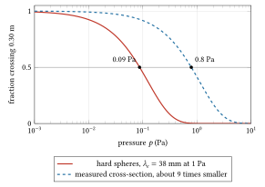
Figure 2.13. The fraction of 2 kV electrons that cross 0.30 m of air without a collision, \(\exp(-L/\lambda_e)\), against pressure. Solid: the hard-sphere estimate, \(\lambda_e = 38\) mm at 1 Pa, half crossing at 0.09 Pa. Dashed: a cross-section about nine times smaller, as measured for nitrogen at 2 keV, half crossing at 0.8 Pa. The scale of pressure is logarithmic.
How pressures are reached and measured is the subject of chapter 3; the glow discharge that fills a tube at higher pressure is taken up in chapter 4.
How it was researched and built
Thomson’s tube, 1897
Thomson’s crossed-field tube was a long glass tube. The rays from the cathode passed through a slit in the anode, an earthed metal plug fitting the tube, then through a slit in a second earthed plug, which together defined a narrow beam. The beam passed between two aluminium plates about 5 cm long, 2 cm broad and 1.5 cm apart, connected to a battery of storage cells, and struck the end of the tube in a small phosphorescent patch. A scale pasted on the outside of the tube measured the patch’s displacement; for the final measurements the room was darkened and a needle coated with luminous paint was moved until it coincided with the patch. The magnetic field came from two coils outside the tube, with diameter equal to the plate length, spaced one radius apart; their mean field was 60 gauss per unit of coil current in his units. Deflections could be seen with as little as about 2 V on the plates (Thomson 1897).
The decisive ingredient was the vacuum. Thomson got deflection only at high exhaustion. For his last run he put sulphur, sulphur iodide and copper filings into the system to absorb mercury vapour from the pump. He also varied the gas in the tube (air, hydrogen, carbonic acid) and the cathode (aluminium and platinum), because the claim was that \(m/e\) was a property of the rays, not of the gas or the metal. The heat-and-charge method used other tubes, of three types, each with two coaxial cylinders, an electrometer and a thermojunction: in two types the rays entered the cylinders through slits, in the third through small holes about 1.5 mm across.
Neither the cost nor the size of the team is recorded in the paper. The Cavendish of 1897 was a university laboratory, and tubes were blown and pumped in-house or by instrument makers.
Braun’s tube, 1897
Braun’s tube had an aluminium cathode, an anode in the side of the tube, a diaphragm of aluminium or glass with a central hole about 2 mm across, and a screen of mica or glass coated with phosphorescent paint. A second diaphragm some 20 cm further on gave a smaller spot. A small coil beside the tube, its axis across the beam, swung the spot with the current under study; two coils, one each side, gave a more uniform field and a rounder spot. He wrote that the tubes were supplied by Franz Müller, Geissler’s successor, and that “they do not all turn out equally good” (Lewis and Mann 1948, quoting Braun). Glass screens were better than mica if the trace was to be photographed. For rapid, high-voltage oscillations he wrapped the tube near the diaphragm in moist filter paper to stop stray electrostatic effects.
The hot cathode and the high vacuum, 1901 to 1922
The hot cathode separated the supply of electrons from the gas. Wehnelt’s work gave both the oxide-coated cathode, which emits at a much lower temperature than bare metal (Wehnelt 1904), and the controlling cylinder named after him. At General Electric in Schenectady, in the same year as Langmuir’s study of space charge, Coolidge put his ductile tungsten into an X-ray tube (Coolidge 1913): a tungsten filament heated by its own current, a tungsten target, and a vacuum so good that the current was carried by electrons alone. Its current was set by the filament’s temperature and its voltage independently, which no gas tube had allowed. The US patent was filed in 1913 and granted in 1916 (US 1,203,495). In the 1920s Coolidge went on to tubes of about 200 kV for deep therapy.
For display tubes the hot cathode arrived commercially in 1922, when John B. Johnson and Harry W. Weinhart of Western Electric produced a tube with a thermionic cathode that worked at 300 to 400 V, using a trace of gas in the tube to focus the beam (Johnson 1922). Low voltage made the tube sensitive (section 2: deflection goes as \(1/V_a\)) but dim. Busch’s lens theory of 1926 showed how fields alone could focus the beam, which is how the gas-free tubes at several kilovolts that followed, sharper and brighter, were focused.
How such a tube is designed today
A gun designer starts from the required current and spot size, picks a cathode (tungsten, oxide or impregnated dispenser cathodes; see chapter 7), and uses the Child–Langmuir scaling to set the gun’s perveance. The electrode shapes are then found with a field solver that traces electrons self-consistently with their own space charge: commercial two-dimensional codes such as Trak from Field Precision (Trak) or ray-tracing programs such as SIMION (SIMION reference), or three-dimensional finite-element packages. Deflection is electrostatic where speed matters (oscilloscopes) and magnetic where large angles matter (television and radar tubes). Screens are aluminium-backed and the glass is coated with a conductive graphite paint (Aquadag) connected to the anode, so that no insulating surface near the beam is left to charge.
At the bench
The parts and their assembly
A tube of the 1920s, or a teaching tube today, has: the glass envelope; the heater and cathode (a tungsten hairpin, or a nickel sleeve coated with oxide around a heater); the Wehnelt cup; the anode with its hole; deflection plates or external coils; the screen; and the leads through the glass. Electrodes are mounted on a glass or mica frame and welded to lead wires that pass through the glass in a seal whose metal must expand with temperature like the glass, or the seal cracks on cooling. The tube is pumped through a glass side-arm and baked to drive water and gas out of the glass and electrodes, the cathode is heated to outgas it, and the side-arm is melted shut. A commercial tube carries a getter, a film of reactive metal such as barium flashed onto the inside of the glass, to take up what gas remains.
A modern example: the 3B Scientific deflection tube has its heater rated at no more than 6.3 V (7.5 V in the 2015 instruction sheet), its anode at 1 to 5 kV with about 0.1 mA at 4 kV, deflection plates about 54 mm apart, and a 90 mm × 60 mm mica screen, phosphor on one side and a centimetre grid printed on the other, set at 15° to the beam so that the beam’s path is seen along it (3B Scientific).
Pumping down: what the discharge looks like
On a demountable tube with a pump and a gauge, and a few kilovolts across the electrodes, the tube goes through a sequence that every nineteenth-century experimenter knew. Teaching laboratories quote the pressures in millimetres of mercury (1 mm = 133 Pa), and their figures for each step differ by up to a factor of ten, because they depend on the tube’s size, its voltage and the gas (schoolphysics; University of Melbourne demonstrations). Take them as a guide.
- At atmosphere: nothing, or a spark if the voltage is high and the gap short.
- Around 1 kPa (about 10 mm): thin violet streamers, then a glowing positive column between the electrodes.
- Around 100 Pa (about 1 mm): the discharge fills the tube. In air it glows pink to violet, with a glow on the cathode; the column breaks into bands, the striations, and a dark gap, the Faraday dark space, separates it from the glow near the cathode. This is Geissler’s regime.
- Between about 70 and 10 Pa (0.5 to 0.1 mm): a second dark layer opens against the cathode, the Crookes (or Hittorf) dark space, and lengthens as the pressure falls.
- Around 1 Pa (about 0.01 mm): the Crookes dark space fills the tube. The gas no longer glows, and the glass opposite the cathode fluoresces yellow-green where the rays strike it.
- Around 0.1 Pa and below: Crookes’s own tubes worked at about 0.1 to 0.006 Pa. With a cold cathode the discharge becomes harder to run and finally goes out, because too few ions are made to sustain it. With a hot cathode the beam continues; this is where the instrument works.
A simple Paschen estimate for air (constants of the form in chapter 4) puts the pressure range in which 2 kV can break down a 30 cm path at about 1.5 to 100 Pa, with the minimum breakdown voltage near 4 Pa. That is where a pumped tube with the anode on lights up.
The filament
With the tube below about 0.1 Pa, the heater comes on. A bare tungsten hairpin passes within moments through dull red (near 800 K), cherry, orange and yellow to white; an oxide cathode on a separate heater warms more slowly and runs far cooler, glowing only red to orange. Watching the colour is a crude thermometer, good to perhaps a hundred kelvin. Heated in air, tungsten oxidises and burns through. Heated at a few pascals, it survives but the gas ions bombard it.
The dot
With the cathode hot and the anode at a few kilovolts, a green dot appears on the screen. Turning the Wehnelt bias more negative dims it and shrinks the current to nothing at cutoff. Turning the anode voltage down dims it faster than the current falls (section 10), and the dot also grows and moves: a slower beam is bent more by the Earth’s field (section 3: 15 mm at 2 kV over 30 cm) and focuses differently. Below a few hundred volts it may vanish entirely while the anode meter still shows current. A dot that blooms and has a faint halo means scattered electrons: the pressure is too high.
Alignment
The dot is rarely in the centre at first. The usual causes are a gun mounted off axis, the Earth’s field, and magnetised steel nearby. Rotate the tube on its stand, or the stand on the bench, and watch the dot move: that part is the Earth’s field. Compensate it with a small magnet, as Braun did, or with a pair of coils carrying a small steady current, or by shielding the tube in soft iron or mu-metal. Note the zero position of the dot with all deflection off before any measurement, and check it again after.
Measuring deflection
Fix a scale on the screen or read the graticule. Apply a known voltage to the plates in steps, both polarities, and read the dot’s centre each time. The plot of deflection against plate voltage should be a straight line through zero, of slope \(l L_s/(2 d V_a)\). Repeat at a second anode voltage: the slope should scale as \(1/V_a\). A line that curves at large deflection shows the beam reaching the plates’ edges or fringing fields. A line that does not pass through zero shows a contact potential or a stray field.
Measuring e/m: the procedure
- Pump the tube, heat the cathode, set the anode voltage \(V_a\) and record it.
- Compensate the Earth’s field as above, then mark the undeflected spot.
- Apply the plate voltage \(V_d\). Read the deflection \(Y_E\).
- Remove the plate voltage. Energise the coils, measuring their current; read the deflection \(Y_B\) in the same direction. Reverse the coil current and read again; average.
- Apply both, with the magnetic deflection opposing the electric one. Adjust the coil current until the spot returns to zero. Then \(v = \mathcal{E}/B\).
- With \(v\) known and the electric deflection measured, \(e/m = \mathcal{E}\theta_E/(B^2 l)\). As a check, compute \(v\) from \(V_a\) as well: \(v = \sqrt{2eV_a/m}\) gives a second route, \(e/m = v^2/(2V_a)\).
Error sources and their signatures
- Fringing fields and non-uniform coils. The plates’ field reaches beyond their edges, by an amount comparable to the gap, so the effective \(l\) is longer than the plates and differs from the coils’ effective length; a pair of coils is uniform only near its middle. Signature: \(e/m\) that changes when the plates or coils are moved, or with the spot’s offset.
- Contact potentials. Different metals at the cathode, anode and plates differ in work function by up to a volt or more (Dushman’s clean-metal values run from 2.24 V for calcium and 2.94 V for thorium to 4.53 V for tungsten), and the electrons leave the cathode with thermal energies of a few tenths of an electronvolt (\(k_B T = 0.22\) eV at 2500 K). Signature: a small zero offset in the deflection, and an error in the beam energy that matters only below a hundred volts or so.
- The Earth’s field and stray magnets. Signature: a dot that moves when the apparatus is turned, or when the steel stool is moved.
- Gas. Ionised gas screens the plates and slows or scatters the beam. Signature: deflection that drifts back towards zero while the plate voltage is held, as Thomson saw; a diffuse spot; a glow along the beam.
- Screen charging. Signature: the spot jumps or drifts as the beam lands on a fresh, uncharged part of an insulating screen.
- Reading the spot. A spot several millimetres across must be read at its centre, and a scale on the outside of thick glass reads differently unless the eye is square to it: Thomson’s luminous needle was one answer.
How it fails
- Filament heated with air in the tube: bright, then dark, then open circuit.
- Gas leak: the glow returns, the dot fades, the anode current rises and becomes unsteady.
- Oxide cathode poisoned by gas or overheating: the dot dims over time at the same settings.
- Screen burnt: a dark spot where a stationary beam stood.
- Too much voltage across a gap: an arc inside, a flash, sometimes a cracked seal (see chapter 4).
Where it stops
A cathode ray tube gives each electron exactly one push: the potential difference between cathode and anode. Everything in it scales from that. The energy is \(|q|V_a\); to double it, double the voltage across one gap. At tens of kilovolts that single gap becomes the limit: the insulation around it, the surfaces in vacuum, and the supply that makes the voltage. Coolidge’s therapy tubes reached about 200 kV in the 1920s, and his cascade tubes, which divided the voltage between tubular electrodes in line, about 900 kV with three sections by 1928 (Livingston and Blewett, sections 2-2 and 2-5; Lee, section I.2, which dates the 900 keV to 1926); a beam of 100 kV electrons already moves at \(0.55c\). But the nuclear physics of the late 1920s wanted particles of millions of electronvolts, and holding millions of volts across one gap was far beyond the insulation of the day. How breakdown sets this limit is the subject of chapter 4. The answer, to divide the voltage over many gaps and many stages of a rectifier circuit, is chapter 5. The other way out, to give the particle many small pushes instead of one large one, begins in chapter 9.
A second limit is current: the Child–Langmuir law ties the current a gun can deliver to \(V^{3/2}\) and its geometry. That limit, and the guns that work around it, return in chapter 7.
Under both lies the condition that made the tube an instrument at all: the beam must cross it without meeting gas, and gas keeps coming off the walls while it is pumped. How a vacuum is made, measured and kept is the next chapter (chapter 3).
Exercises
1. What speed does an electron reach after 4 kV? Give the exact value and the error of the non-relativistic formula.
Answer
\(\gamma = 1 + 4000/510\,999 = 1.00783\), \(\beta = 0.1244\), \(v = 3.729 \times 10^{7}\) m/s. The non-relativistic formula gives \(3.751 \times 10^{7}\) m/s, 0.59 per cent high.
2. A 30 cm tube runs at 5 kV with its beam across the Earth’s field of 50 μT. How far does the spot move?
Answer
\(\gamma = 1 + 5000/510\,999 = 1.00978\) and \(p = m_e c\sqrt{\gamma^2 - 1} = 71.7\) keV/\(c\), so \(r = p/(eB) = 4.78\) m. The sagitta over 0.30 m is \(r - \sqrt{r^2 - L^2} = 9.4\) mm, almost exactly \(L^2/2r\). Turning the tube end for end moves the spot 19 mm.
3. Convert the first row of Thomson’s crossed-field table to SI and compute \(v\) and \(e/m\): \(\theta = 8/110\) rad, \(B = 5.5\) gauss, \(\mathcal{E} = 1.5 \times 10^{10}\) abvolt/cm, \(l = 5\) cm. How far is the answer from the modern value?
Answer
\(B = 0.55\) mT; 1 abvolt is \(10^{-8}\) V, so \(\mathcal{E} = 1.5 \times 10^{10} \times 10^{-8}\) V/cm \(= 150\) V/cm \(= 15\) kV/m; \(l = 0.05\) m. Then \(v = \mathcal{E}/B = 2.73 \times 10^{7}\) m/s and \(e/m = \mathcal{E}\theta/(B^2 l) = 7.2 \times 10^{10}\) C/kg. The modern value, \(1.7588 \times 10^{11}\) C/kg, is 2.44 times larger.
4. A tungsten cathode runs at 2400 K. By what factor does its saturated emission rise if it is heated to 2500 K? Use \(\phi_w = 4.53\) V.
Answer
\(J_2/J_1 = (2500/2400)^2 \exp[(e\phi_w/k_B)(1/2400 - 1/2500)]\). With \(e\phi_w/k_B = 52\,570\) K, the ratio is 2.61. (From the table: 0.107 to 0.278 A/cm\(^2\).)
5. Show that in a space-charge-limited planar diode the transit time from cathode to anode is \(3d/v_f\), where \(v_f\) is the final speed. Compare with an empty gap.
Answer
From the derivation, \(V(x) = V_a (x/d)^{4/3}\), so \(v(x) = v_f (x/d)^{2/3}\). Then \(t = \int_0^d dx/v = (d^{2/3}/v_f)\int_0^d x^{-2/3}dx = (d^{2/3}/v_f)\,3d^{1/3} = 3d/v_f\). In an empty gap the acceleration is uniform, the mean speed is \(v_f/2\), and \(t = 2d/v_f\). The space charge makes the electrons dawdle near the cathode, where the field is weak. For \(d = 5\) mm at 2 kV, \(v_f = 2.65 \times 10^{7}\) m/s and the transit time is 0.57 ns.
6. A flat cathode of 0.5 mm\(^2\) at 2500 K faces an anode 5 mm away. Find the perveance and the anode voltage at which the diode changes from space-charge-limited to emission-limited.
Answer
\(K = 2.334 \times 10^{-6} \times 0.5 \times 10^{-6}/(5 \times 10^{-3})^2 = 4.67 \times 10^{-8}\) A/V\(^{3/2}\). The cathode offers \(J_{RD} = 2.78 \times 10^{3}\) A/m\(^2\). Setting \(2.334 \times 10^{-6} V^{3/2}/d^2 = J_{RD}\) gives \(V = (J_{RD} d^2/2.334 \times 10^{-6})^{2/3} = 960\) V. Below it the current is \(K V^{3/2}\) (0.24 mA at 300 V); above it, 1.39 mA whatever the voltage.
7. What pressure of air is needed for 90 per cent of the electrons to cross a 0.30 m tube without a collision, on the hard-sphere estimate? Why is the real requirement less strict for a 2 kV beam?
Answer
Need \(\exp(-L/\lambda_e) = 0.9\), so \(\lambda_e = L/\ln(1/0.9) = 2.85\) m. With \(\lambda_e = 37.8\) mm at 1 Pa and \(\lambda_e \propto 1/p\), \(p = 0.0378/2.85 = 0.013\) Pa. The real cross-section of nitrogen at keV energies is smaller than the hard-sphere area, and most collisions there deflect the electron only slightly, so many scattered electrons still land near the dot.
8. A thin magnetic lens (a single loop of radius 25 mm) must focus a 4 kV beam at 0.30 m. How many ampere-turns are needed? If the anode is raised to 7 kV, by what factor must the current change?
Answer
\(NI = \sqrt{97.8\,V_a a/f} = \sqrt{97.8 \times 4000 \times 0.025/0.30} = 181\) ampere-turns. Since \(f \propto V_a/(NI)^2\), holding \(f\) needs \(NI \propto \sqrt{V_a}\): a factor \(\sqrt{7/4} = 1.32\).
9. Thomson’s first-method run gave \(W_{tot}/Q = 4.6 \times 10^{11}\) erg/abC and \(B\rho = 230\) gauss cm. Find the electrons’ kinetic energy per charge in volts, their speed, and \(m/e\). Then show that his crossed-field run, with the true \(e/m_e\), should have given \(\theta \approx 0.18\) rather than 0.073.
Answer
1 erg/abC \(= 10^{-7}\) J / 10 C \(= 10^{-8}\) V, so \(W_{tot}/Q = 4600\) V. \(B\rho = 230 \times 10^{-4}\) T \(\times 10^{-2}\) m \(= 2.30 \times 10^{-4}\) T m. \(v = 2(W_{tot}/Q)/(B\rho) = 4.0 \times 10^{7}\) m/s; \(m/e = (B\rho)^2/(2W_{tot}/Q) = 5.75 \times 10^{-12}\) kg/C, 1.1 per cent above \(5.686 \times 10^{-12}\). For the crossed-field run, his nominal fields give \(v = \mathcal{E}/B = 2.73 \times 10^{7}\) m/s, and then \(\theta_E = (e/m_e)\mathcal{E} l/v^2 = 1.7588 \times 10^{11} \times 15\,000 \times 0.05/(2.73 \times 10^{7})^2 = 0.177\) rad. (Equivalently, at balance \(\theta = (e/m)B^2 l/\mathcal{E}\), whatever the speed.) He measured 0.073: the balanced deflection was 2.4 times smaller than his nominal fields imply, which is the factor in his \(e/m\). Since \(\theta \propto B^2/\mathcal{E}\), the fault lies in the fields’ effective values, not in the deflection alone: a magnetic field about \(\sqrt{2.44} = 1.56\) times weaker in effect than he reckoned would account for it, while an electric field weakened by screening would push his \(m/e\) the other way (section 4).
10. Derive the relativistic form of the electrostatic deflection sensitivity and find the correction at 30 kV.
Answer
The transverse impulse is \(|q|\mathcal{E}\,l/v\) and the longitudinal momentum \(p\), so \(\tan\theta = |q|\mathcal{E}l/(pv)\) and \(Y = |q|\mathcal{E}\,l L_s/(pv)\). Non-relativistically \(pv = 2|q|V_a\). Exactly, \(pv = (\gamma^2 - 1)m c^2/\gamma = W(W + 2mc^2)/(W + mc^2)\). The correction factor is \(2|q|V_a/(pv) = 2(W + mc^2)/(W + 2mc^2)\). At 30 kV it is 1.029: the beam is deflected 2.9 per cent more than the simple formula says.
Sources
Primary papers (the dates in the chapter are the publication years):
- J. Plücker, “Ueber die Einwirkung des Magneten auf die elektrischen Entladungen in verdünnten Gasen”, Annalen der Physik 179 (Poggendorff’s vol. 103), 88 (1858). doi:10.1002/andp.18581790106
- W. Hittorf, “Ueber die Elektricitätsleitung der Gase”, Annalen der Physik 212, 1 and 197 (1869).
- W. Crookes, “On the illumination of lines of molecular pressure, and the trajectory of molecules” (Bakerian lecture), Philosophical Transactions of the Royal Society 170, 135 (1879). doi:10.1098/rstl.1879.0065
- H. Hertz, “Versuche über die Glimmentladung”, Annalen der Physik 255, 782 (1883).
- H. Hertz, “Ueber den Durchgang der Kathodenstrahlen durch dünne Metallschichten”, Annalen der Physik 281, 28 (1892).
- P. Lenard, “Ueber Kathodenstrahlen in Gasen von atmosphärischem Druck und im äussersten Vacuum”, Annalen der Physik 287, 225 (1894).
- J. Perrin, “Nouvelles propriétés des rayons cathodiques”, Comptes rendus de l’Académie des sciences 121, 1130 (1895).
- J. J. Thomson, “Cathode rays” (lecture of 30 April 1897), Proceedings of the Royal Institution 15, 419 (1897). Free transcription: https://todayinsci.com/T/Thomson_JJ/ThomsonJJ-CathodeRays(1897).htm (cited as Thomson 1897a).
- J. J. Thomson, “Cathode rays”, Philosophical Magazine (5th series) 44, 293 (1897). doi:10.1080/14786449708621070. Free transcription: https://web.lemoyne.edu/~giunta/thomson1897.html
- W. Kaufmann, “Die magnetische Ablenkbarkeit der Kathodenstrahlen und ihre Abhängigkeit vom Entladungspotential”, Annalen der Physik 297, 544 (1897).
- F. Braun, “Ueber ein Verfahren zur Demonstration und zum Studium des zeitlichen Verlaufes variabler Ströme”, Annalen der Physik 296 (Wiedemann’s vol. 60), 552 (1897).
- T. A. Edison, “Electrical indicator”, US patent 307,031 (filed 15 November 1883, granted 21 October 1884). Free: https://patents.google.com/patent/US307031
- O. W. Richardson, “On the negative radiation from hot platinum”, Proceedings of the Cambridge Philosophical Society 11, 286 (1901).
- A. Wehnelt, “Über den Austritt negativer Ionen aus glühenden Metallverbindungen und damit zusammenhängende Erscheinungen”, Annalen der Physik 319, 425 (1904).
- C. D. Child, “Discharge from hot CaO”, Physical Review (Series I) 32, 492 (1911).
- R. A. Millikan, “The isolation of an ion, a precision measurement of its charge, and the correction of Stokes’s law”, Physical Review (Series I) 32, 349 (1911); and “On the elementary electrical charge and the Avogadro constant”, Physical Review 2, 109 (1913) (cited as Millikan 1913).
- I. Langmuir, “The effect of space charge and residual gases on thermionic currents in high vacuum”, Physical Review 2, 450 (1913).
- W. D. Coolidge, “A powerful Röntgen ray tube with a pure electron discharge”, Physical Review 2, 409 (1913).
- J. B. Johnson, “A low voltage cathode ray oscillograph”, Bell System Technical Journal 1, 142 (1922); also Journal of the Optical Society of America 6, 701 (1922).
- S. Dushman, “Electron emission from metals as a function of temperature”, Physical Review 21, 623 (1923).
- I. Langmuir, “The effect of space charge and initial velocities on the potential distribution and thermionic current between parallel plane electrodes”, Physical Review 21, 419 (1923).
- H. Busch, “Berechnung der Bahn von Kathodenstrahlen im axialsymmetrischen elektromagnetischen Felde”, Annalen der Physik 386 (4th series vol. 81), 974 (1926).
Later papers and data:
- G. Lewis and F. J. Mann, “Ferdinand Braun, inventor of the cathode-ray tube”, Electrical Communication 25, no. 4 (December 1948), quoting Braun’s own description of his tube from a later article of his in The Electrician. Free: https://www.worldradiohistory.com/Archive-ITT/40s/ITT-Vol-25-1948-04.pdf
- K. Kanaya and S. Okayama, “Penetration and energy-loss theory of electrons in solid targets”, Journal of Physics D 5, 43 (1972). The range formula used here is their empirical fit, \(R = 0.0276\,A E^{1.67}/(Z^{0.889}\rho)\) μm with \(E\) in keV.
- M. S. Elmanharawy and A. Abdel-Kader, “Cathodoluminescence studies on phosphors used in cathode-ray tube screening”, Revue Roumaine de Physique 25, 515 (1980). Abstract: https://www.osti.gov/etdeweb/biblio/5865219
- G. García, A. Pérez and J. Campos, “Total cross section for electron scattering from N2 in the energy range 600–5000 eV”, Physical Review A 38, 654 (1988).
- B. L. Abrams, W. J. Thomes, J. S. Bang and P. H. Holloway, “Degradation of nanoparticulate-coated and uncoated sulfide-based cathodoluminescent phosphors”, Reviews on Advanced Materials Science 5, no. 2 (2003). Free: https://ipme.ru/e-journals/RAMS/no_2503/abrams/abrams.html
- US patent 4,549,083, “X-ray imaging device for directly displaying X-ray images” (the “dead voltage” of about 2 kV for ordinary screens). Free: https://patents.google.com/patent/US4549083
- CODATA 2018 constants, as in scipy.constants.
Books:
- T. Soller, M. A. Starr and G. E. Valley, Cathode Ray Tube Displays, MIT Radiation Laboratory Series vol. 22 (McGraw-Hill, 1948): chapter 2 (guns, crossover, grid drive), section 3.4 (focus coils), sections 18.6, 18.8 and 18.9 (sticking potential, willemite’s decay, brightness against voltage). Free: https://archive.org/details/dli.ernet.13046
- S. Humphries, Charged Particle Beams (Wiley, 1990), section 5.2 (the one-dimensional Child law) and section 6.5 (relativistic Child law). Free from the author: https://www.fieldp.com/cpb.html
- S. Humphries, Principles of Charged Particle Acceleration (Wiley, 1986), sections 2.9 (relativistic formulas), 3.7 (motion in a uniform magnetic field), 6.2 to 6.7 (paraxial fields, aperture, immersion and einzel lenses, solenoidal magnetic lens). Free from the author: https://www.fieldp.com/cpa.html
- L. D. Landau and E. M. Lifshitz, The Classical Theory of Fields (Course of Theoretical Physics vol. 2, 4th English edition): §9 (energy and momentum), §16 (four-potential and generalised momentum), §17 (equations of motion of a charge in a field), §20 (motion in a constant uniform electric field), §21 (in a constant uniform magnetic field), §22 (in crossed fields).
- L. D. Landau and E. M. Lifshitz, Mechanics (vol. 1): §14 (cyclic co-ordinates and conserved generalised momenta).
- L. D. Landau and E. M. Lifshitz, Statistical Physics, Part 1 (vol. 5): §39 (molecular collisions), §53 (the Fermi distribution), §56 (Fermi gases of elementary particles).
- E. Kuffel, W. S. Zaengl and J. Kuffel, High Voltage Engineering: Fundamentals, 2nd ed. (Newnes, 2000), sections 5.3.1 and 5.3.3, pp. 317 to 318: work functions (Table 5.8, tungsten 4.35 to 4.6 eV), the Richardson relation with \(A = 120 \times 10^4\) A m\(^{-2}\) K\(^{-2}\), and measured values below it because of reflection at the surface.
- A. W. Chao, M. Tigner, H. Weise and F. Zimmermann (eds.), Handbook of Accelerator Physics and Engineering, 3rd ed. (World Scientific, 2023), section 7.1.1.1 (H. G. Kirk, thermionic cathodes), p. 653: \(A \approx 60\) A cm\(^{-2}\) K\(^{-2}\) for metals, tungsten about 4.5 eV, thoriated tungsten 2.65 eV, the Wehnelt cylinder and Child’s law.
- J. F. O’Hanlon, A User’s Guide to Vacuum Technology, 2nd ed. (Wiley, 1989), section 2.1.3, equation 2.5 (p. 12) and Table 2.1: the mean free path of air at room temperature, 6.6 mm at 1 Pa and \(6.5 \times 10^{-8}\) m at atmosphere (22 °C).
- M. S. Livingston and J. P. Blewett, Particle Accelerators (McGraw-Hill, 1962), section 2-2 (p. 17: the Coolidge cascade X-ray tube, a column of tubular electrodes dividing the voltage) and section 2-5 (Coolidge’s thermionic cathode and sealed-off tube; an emergent electron beam of 350 keV through a foil window in 1926).
- S. Y. Lee, Accelerator Physics, chapter 1, section I.2 (p. 5): Coolidge’s 900 keV electron beam from three X-ray tubes in series, dated there to 1926.
Reference pages used for single facts (checked October 2026):
- Wikipedia, “Crookes tube” (Geissler and Crookes pressures, the dark space, the glass fluorescence), “Cathode ray” (Goldstein 1876, the wave and particle schools), “Cathode-ray tube” (Johnson and Weinhart 1922), “Wehnelt cylinder” (1902 to 1903), “Thermionic emission” (Edison’s observation of 1880), “Oil drop experiment” (Millikan and Fletcher 1909, 0.6 per cent), “Draper point” (798 K, 1847), “Red heat” (colour tables after Chapman’s Workshop Technology and A Book of Steam for Engineers, 1905), “Tungsten” (melting point 3695 K), “William D. Coolidge” (ductile tungsten, lamps 1911, patent 1,203,495), “Mean free path” (66 nm in air at atmosphere), “Paschen’s law” (air constants and the 327 V minimum).
- Wikipedia, “Cathode-ray tube” also for Aquadag, the conductive graphite coating.
- 3B Scientific, Electron Deflection Tube D (1000651), product data: heater, anode, current, plate spacing, screen; and its instruction sheet dated 10/15: https://www.3bscientific.com/product-manual/1000651_EN.pdf
- schoolphysics, “Electricity in gases”: the discharge as the pressure falls, with pressures in mm of mercury. https://www.schoolphysics.co.uk/age16-19/Electricity%20and%20magnetism/Current%20electricity/text/Electricity_in_gases/index.html
- University of Melbourne, School of Physics lecture demonstrations, “Ef-3 Conduction of electricity through gases” (a table of the discharge’s appearance against pressure, seen in a search summary; the page itself refused access).
- SIMION, “Richardson–Dushman equation” reference page (tungsten 4.54 eV and 60 A cm\(^{-2}\) K\(^{-2}\)): https://simion.com/info/richardson_dushman.html
- Field Precision, Trak charged particle toolkit: https://www.fieldp.com/trak.html